データサイエンス実践 Ch3 データの可視化
資料
データの可視化
ここまでで, プログラミングを利用してデータを読み込み, 編集ができるようになりました. これから, データを分析する手法を学習しましょう. データ分析の第一歩は, データの可視化です.
統計データはテーブル形式のまま, 眺めても理解できません. データを可視化することで, データの特徴や意味を理解する助けになります. ここでは, データを可視化するいくつかの方法を学びましょう.
ライブラリのインストール
Python におけるグラフ作成の, 代表的なライブラリには, matplotlibやseabornがあります.
それぞれ, uv add しておきましょう.
matplotlib, seaborn はそれぞれ以下のようにインポートするのが一般的です.
import matplotlib.pyplot as pltimport seaborn as sns
matplotlibにおける日本語表示matplotlibは日本語などのマルチバイト文字に対応しておらず, 日本語を使用すると日本語部分が □ (通称豆腐) に変わります.
例: 「Hello こんにちは」 → 「Hello □ □ □ □ □」
matplotlib で日本語を利用する方法として一番簡単なものに, matplotlib-fontja の利用があります.
uv add matplotlib-fontja したあとに, import matplotlib_fontja をしましょう (uv add では '-' (ハイフン) ですが, import 文では '_' (アンダーバー) なので注意してください).
japanize-matplotlibはサポート終了済み
かつて同様の用途で広く使われていた japanize-matplotlib は すでにサポートが終了しています. 既存のコードや解説記事で import japanize_matplotlib という記述を見かけることがありますが, これからは後継である matplotlib-fontja を利用してください.
matplotlib-fontja は japanize-matplotlib のフォークとして開発されており, インポートするだけで日本語フォントが適用される点はそのままで, Python 3.12 以降で発生していた ModuleNotFoundError: No module named 'distutils' の問題も解消されています.
本章のコードは, 先頭に以下の記述があることを前提とします.
import pandas as pd
import numpy as np
import matplotlib.pyplot as plt
import matplotlib_fontja
import seaborn as snsグラフの選び方:データの次元と種別
グラフを作る前に, まず どのグラフを使うか を決めましょう. 使うべきグラフは, 同時に見る観測項目の数 (データの 次元) と, 各項目が 質的データ か 量的データ かで, おおよそ決まります.
下の樹形図は, 観測項目の数 (データの次元) と各項目の種別を上から順にたどって, 代表的なグラフを選ぶためのものです. 各グラフ名をクリックすると, 本章の対応する解説に移動します.
-
データ
-
1次元データ
-
2次元データ
-
3次元以上のデータ
-
ヒストグラムと棒グラフの違い
1 次元データをどちらのグラフで表すかは, 「質的か量的か」だけでは決まりません. 効いてくるのは次の 2 点です.
- 順序があるか: 累積度数・中央値・分布の歪みといった「並び方から読み取る情報」は, カテゴリに順序が無いと意味を持ちません.
- 連続量を階級 (階級幅) に区切ったものか: 面積が度数に比例する, というヒストグラム本来の読み方は, 連続量を区間に分けて初めて成り立ちます.
この 2 点で整理すると, 次のようになります.
- 名義尺度 (血液型・職業など順序の無いカテゴリ) は 棒グラフ で表し, 棒を離して並べます. 並び順は任意で, 棒を入れ替えても中身は変わらないので, 「形」を読んではいけません.
- 順序尺度 (満足度・成績・難易度など順序のあるカテゴリ) は順序があるので累積度数や歪みが読め, 棒を隙間なく詰めて ヒストグラムのように 描いても構いません. ただしカテゴリは離散的で階級幅の概念が無いため, 厳密な意味でのヒストグラムではありません.
- 量的データ (身長・気温など連続した数値) は階級に区切って ヒストグラム で表します. 棒を隙間なく並べ, 階級幅・面積=度数 といった本来の読み方ができます.
構成比を一般向けに伝えたいときは 円グラフ も使えます. 棒を離すか詰めるかは「連続量を階級に区切ったか」で決まり, 質的データでも順序尺度なら詰めて (ヒストグラム風に) 描いてかまいません.
樹形図はデータの形からグラフを選ぶ方法です. グラフを選ぶもう 1 つの手がかりは, 図で何を見せたいか (比較, 構成, 分布, 変化, 関係) です. 見せたいことと本章の節の対応は次のとおりです.
- 比較: 棒グラフ
- 構成: 円グラフ, 積み上げ棒グラフ
- 分布: ヒストグラム, 箱ひげ図
- 変化: 折れ線グラフ (複数の系列を重ねる方法は for 文を利用したグラフ (発展))
- 関係: 散布図, 散布図行列, ヒートマップ, 変数の関係を図で表す (発展)
同じデータでも, 軸に何を取るかで読み取れることが変わり (縦軸と横軸の選び方), 軸の範囲や色の付け方によっては, グループの間に実際より大きな差があるように見えます (誇張と強調が読み取りに与える影響).
この節に対応する演習は, 章末のExercise DSP3-2です.
基礎的なグラフ (棒グラフ, 円グラフ, 折れ線グラフ)
matplotlib を利用して, グラフを作成する大まかな手順は以下のようになります.
データを準備します. CSV を作りましょう.
pandasで CSV を読み込みます.グラフにしたい部分を抽出します.
グラフを作るために何が必要かはグラフの種類によります.
matplotlibのメソッドを利用してグラフを生成します.基本的なメソッドは以下のとおりです.
グラフの種類 メソッド 棒グラフ plt.bar(x軸のリスト,y軸のリスト)円グラフ plt.pie(カテゴリー別のデータのリスト,labels=ラベルのリスト)折れ線グラフ plt.plot(x軸のリスト,y軸のリスト)散布図 plt.scatter(x軸のリスト,y軸のリスト)これら以外のグラフは, 個別に扱います.
グラフの見た目を整えます.
ある程度自動で設定されますが, 色, 目盛り, 形, 軸などを個別に設定できます.
グラフの要素 メソッド タイトル plt.title('タイトル')凡例 plt.legend()y 軸 plt.yticks(軸の目盛のリスト)x 軸 plt.xticks(軸の目盛のリスト)y 軸ラベル plt.ylabel('ラベル')x 軸ラベル plt.xlabel('ラベル')補助線の追加 plt.minorticks_on()plt.grid(which='both')表示領域 plt.ylim(min,max)plt.xlim(min,max)plt.show()でグラフを出力します.
ポップアップウィンドウでグラフが表示されます.
- グラフを保存します.
ポップアップウィンドウの保存ボタンを押すと, 画像に名前をつけて保存できます.
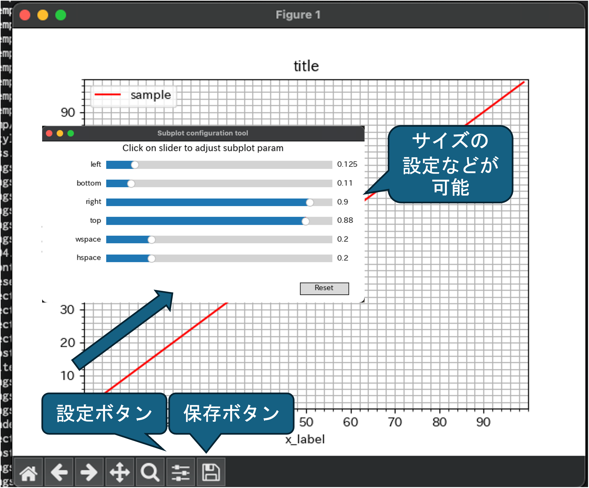
例えば, 以下のコードで次のグラフが表示されます.
np.arange(0,100,1) は, 0 から 99 まで 1 ずつ増える数値の numpy の配列を生成します.
[x for x in range(0,100,1)] でも同様の結果となります.
plt.plot(np.arange(0,100,1)
,np.arange(0,100,1)
,color='red'
,label='sample')
plt.title('title')
plt.ylim(0,100)
plt.xlim(0,100)
plt.xticks(np.arange(0,100,10))
plt.yticks(np.arange(0,100,10))
plt.minorticks_on()
plt.grid(which='both')
plt.xlabel('x_label')
plt.ylabel('y_label')
plt.legend()
plt.show()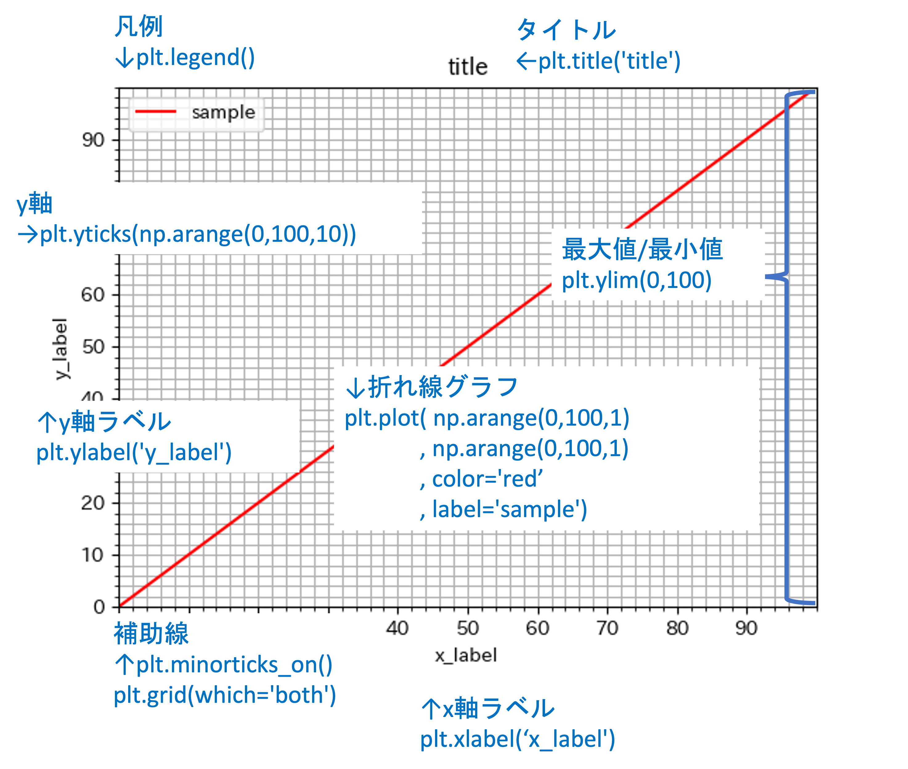
画像は plt.show() で表示されるポップアップウィンドウを立ち上げなくても, plt.savefig('figure.png') と記述することで保存できます.
ただし, plt.show() をして自分でポップアップウィンドウを閉じないと, plt. による設定がメモリに残ったままになります.
plt.show() を実行しない場合は, 必ず最後に plt.close() を追加してメモリを解放しましょう.
plt.plot(np.arange(0,100,1)
,np.arange(0,100,1)
,color='red'
,label='sample')
plt.savefig('figure.png')
plt.close()棒グラフの作成
こちらからデータをダウンロードし, 棒グラフを作成してみましょう.
まずはデータを確認します.
# import 部分は省略されています
# dataフォルダにあるbar_pie.csvというファイルを読み込みます.
df = pd.read_csv("data/bar_pie.csv")
# 読み込んだファイルの中身を見てみます.
print(df)
"""
cat dog bird
0 10 12 20
"""プログラムは読み込むデータと, 作りたいグラフの形によって変化します. どのようなデータが必要かを意識して, データを抽出しましょう.
棒グラフの作成に必要なデータは,
棒毎のラベル
それぞれの棒の名前です. 文字列で指定します.
今回は 'cat', 'dog', 'bird' とします.
棒毎のx軸の位置
棒グラフの位置は, 0 から始まる整数の列として指定します.
今回は, 0, 1, 2 を指定します.
棒毎の高さになります.
高さに 10, 12, 20 を指定します.
# 棒グラフのラベルを抽出します
# df.columns でDataFrameからHeaderを抽出し,
# list()関数でDataFrameからlist型に変換しています
labels = list(df.columns)
# 棒グラフのx軸のどこに置くのかを指定しています.
# np.arange(x) は [0,1,..,x]というarrayを作ります.
x_position = np.arange(len(labels))
#棒グラフの高さを抽出します
# メソッド iloc[x]はDataFrameのx行目を抽出します.
values = list(df.iloc[0])抽出した情報を元に, 棒グラフを作成します.
plt.bar(X軸のリスト,Y軸のリスト) の形で, データを指定します.
# 棒グラフを作成します.
# x 軸 にx_position
# それぞれの棒グラフの高さにvaluesを与えています.
# その他にも沢山の引数があります.
plt.bar(x=x_position, height=values)このままだと, X 軸のラベルに何も記述されないので,
plt.xticks(ラベルの位置のリスト,ラベルのリスト) で, ラベルを指定します.
#ラベルの位置を指定します.
plt.xticks(ticks=x_position,labels=labels)
# Y軸ラベルを指定します
plt.ylabel("number")
# タイトルを指名します
plt.title("kind")
# グラフの表示
plt.show()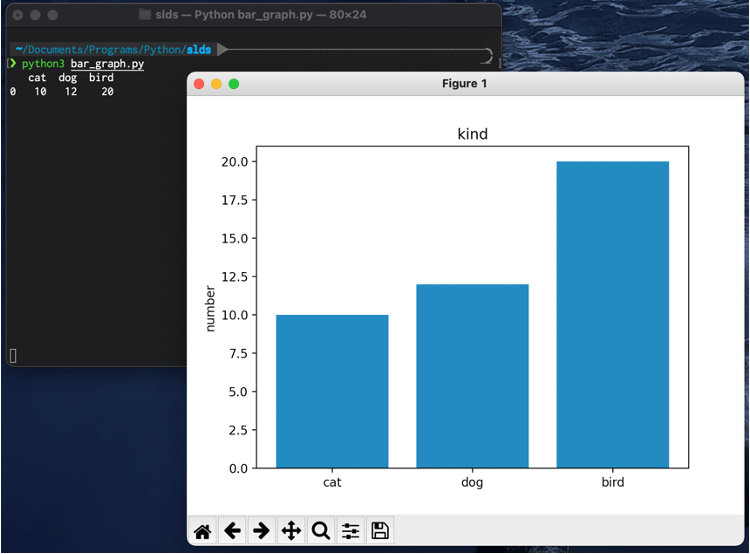
表示されたグラフは, 保存ボタンで画像として保存できます.
グラフ作成の基本は, これで終わりです. あとは, それぞれのグラフごとに plt.bar() の部分を使い分け, グラフのデザインを変更することで, 様々なグラフが作成できます. 色, スタイル, 凡例などの変更は, グラフのデザインの変更 (発展)にまとめてあります.
この節に対応する演習は, 章末のExercise DSP3-4です.
円グラフ
先ほどと同じデータ bar_pie.csv を利用して円グラフを作成してみます.
"""
header1 header2 header3 ...
value1 value2 value3 ...
の形のcsvから棒グラフを作成する
"""
# dataフォルダにあるbar_pie.csvというファイルを読み込みます.
df = pd.read_csv("data/bar_pie.csv")
# 読み込んだファイルの中身を見てみます.
print(df)
# 棒グラフのラベルを抽出します
# df.columns でDataFrameからHeaderを抽出し,
# list()関数でDataFrameからlist型に変換しています
labels = list(df.columns)
# メソッド iloc[x]はDataFrameのx行目を抽出します.
values = list(df.iloc[0])
# 円グラフの作成
plt.pie(values, labels=labels, autopct='%1.1f%%')
# タイトルを指名します
plt.title("kind")
# グラフの表示
plt.show()円グラフは, plt.pie() にそれぞれの領域の割合と, ラベルを与えることで, 作成できます.
グラフに数字を表示するには, autopct= に フォーマット文字列 で表示内容を指定します.
上記の例では '%1.1f%%' と書くことで, 小数点 1 桁まで数値を表示しています.
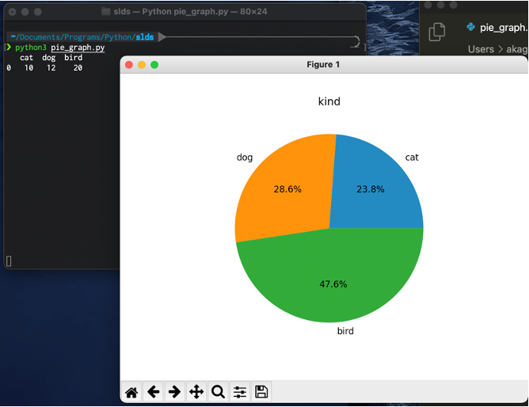
この節に対応する演習は, 章末のExercise DSP3-4です.
積み上げ棒グラフ
円グラフは 1 つの全体の内訳を表します. 複数のグループの内訳を並べて比べるときは, 棒を内訳ごとに色分けして積み上げた積み上げ棒グラフを使います. 棒全体の高さがグループの合計を, 色ごとの長さが内訳を表します.
積み上げ棒グラフの例には, 都道府県別のデータ (こちら) を使います. e-Stat の都道府県データから 2006 年の値を集めたもので, 列は次のとおりです. このデータは本章の後半の散布図行列, 縦軸と横軸の選び方, 誇張と強調が読み取りに与える影響でも使います.
| 列 | 内容 |
|---|---|
pref |
都道府県名 |
height |
高校 2 年生男子の平均身長 (cm) |
weight |
高校 2 年生男子の平均体重 (kg) |
food |
二人以上の世帯のうち勤労者世帯の食料費 (円) |
sleep |
10 歳以上男性の睡眠の平均時間 (分) |
sports |
15 歳以上男性のスポーツの平均時間 (運動時間, 分) |
あわせて, 都道府県を 8 つの地方 (北海道, 東北, 関東, 中部, 近畿, 中国, 四国, 九州・沖縄) に分けた表 (こちら) も使います. 三重県は近畿に含めています.
地方ごとに, 運動時間が短い県, 中くらいの県, 長い県がいくつずつあるかを積み上げ棒グラフで表します.
df = pd.read_csv('data/pref_stats.csv', encoding='utf-8-sig')
region = pd.read_csv('data/pref_region.csv', encoding='utf-8-sig')
# pref 列が一致する行同士をつないで, 地方の列を加えます.
df = df.merge(region, on='pref')
# 運動時間を 3 つの階級に分けます. (0, 14], (14, 17], (17, 60] の区間になります.
df['sports_class'] = pd.cut(df['sports']
,bins=[0, 14, 17, 60]
,labels=['14分以下', '15〜17分', '18分以上'])
# 地方ごと, 階級ごとに都道府県の数を数えます.
order = ['北海道', '東北', '関東', '中部', '近畿', '中国', '四国', '九州・沖縄']
table = pd.crosstab(df['region'], df['sports_class']).reindex(order)
print(table)
# stacked=True で, 列ごとの棒を積み上げます.
table.plot.bar(stacked=True, rot=0)
plt.xlabel('地方')
plt.ylabel('都道府県数')
plt.legend(title='運動時間')
plt.show()sports_class 14分以下 15〜17分 18分以上
region
北海道 0 1 0
東北 5 1 0
関東 0 7 0
中部 4 4 1
近畿 0 4 3
中国 1 4 0
四国 0 2 2
九州・沖縄 1 1 6pd.cut() は量的データを bins= で指定した区間に分け, 各値がどの階級に入るかを表す列を作ります. pd.crosstab(行, 列) は, 2 つの列の値の組み合わせごとに行数を数えた表を作ります (同時度数分布表 (発展)で詳しく扱います). できた表の .plot.bar(stacked=True) を呼ぶと, 列 (階級) ごとの棒が行 (地方) ごとに積み上がります. plt.bar() で描く場合は, 2 つ目以降の棒の引数 bottom= に, それまでに積んだ高さを渡します.
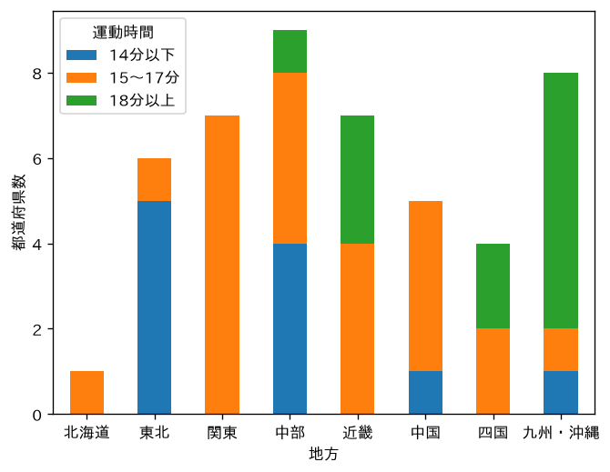
東北は 6 県のうち 5 県が 14 分以下, 九州・沖縄は 8 県のうち 6 県が 18 分以上で, 関東は 7 都県すべてが 15〜17 分に入ります. 運動時間の短い県は北に, 長い県は南に多いことが読み取れます. 一方で, 棒全体の高さは地方の都道府県数 (北海道の 1 から中部の 9 まで) で決まるので, 地方同士で内訳の割合を比べるには向きません. 割合で比べる描き方は実数か割合かで扱います.
同時度数分布表 (発展)
2つの観測項目の関係を調べる手法として散布図を学びましたが,散布図は量的データにしか使えません. 質的変数同士の関係性を調べるにはどのようにしたらいいのでしょうか.
質的変数同士の関係性を調べる手法として代表的なものに同時度数分布表(クロス表)があります. 例えばこちらのデータはある講義の成績情報ですが,観測項目として成績以外に1時限から5時限までの時限が記録されています. 時限が早い講義と遅い講義で成績が変わるのかという関係性を調べてみます.
Period Grade
0 2 B
1 5 A
2 4 A
3 3 C
4 1 C
.. ... ...
195 2 C
196 4 C
197 5 C
198 5 F
199 4 C試しに,散布図でPeriodとGradeの関係を表してみましょう.
成績をそのままでは,散布図の軸上に配置できないので数値に変換します.
df = pd.read_csv('data/cross_table_data.csv')
print(df)
#あえて散布図を作ってみる
grade_num_map = {'S':1
,'A':2
,'B':3
,'C':4
,'F':5}
df['Grade_num'] = df['Grade'].map(lambda x: grade_num_map[x])
plt.scatter(df['Period'],df['Grade'])
plt.xlabel('Period')
plt.ylabel('Grade')
plt.show()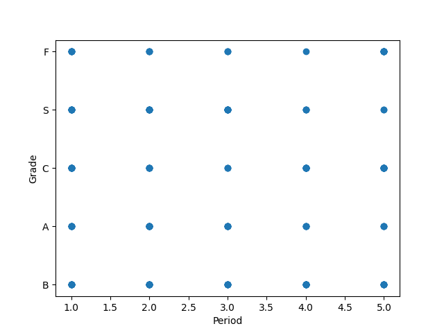
質的データを数値に変換したとしても,離散値となるため,散布図はこのように基本的にはすべての交点に点があるだけのなんの情報も得られないグラフとなります.
散布図としてプロットすると, 点がありうる場所が少なすぎるため情報がとれません. 元々知りたいことは,講義の時限と成績にどのような関係があるのかということでした. そこで, 講義の時間ごとの成績の偏りが分かるように可視化することを考えてみます.
講義の時限ごとの成績の分布がわかり,それぞれに違いがあれば時限によって成績に偏りが出ていると言えそうです. そこで,以下のように講義の時限毎の成績の度数分布表を作ってみましょう.
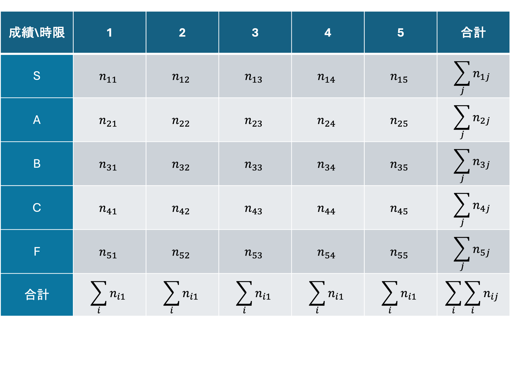
この度数分布表では,時限毎にその成績を取った学生の度数が数えられています(n_{11}は1時限にSを取った学生の度数,n_{ij}はj時限に上からi番目の成績をとった学生の度数.)
このような2観測項目の度数分布表を同時度数分布表あるいは,クロス表(cross table)といいます.
それでは,Pythonで同時度数分布表を作成してみましょう.
pandas では,.crosstab(行,列)メソッドを利用することで,クロス表が作成できます.
#クロス表の作成
cross = pd.crosstab(df['Grade'],df['Period'])
#表示順の設定
cross = cross.reindex([1,2,3,4,5],axis='columns')
cross = cross.reindex(['S','A','B','C','F'],axis='index')
print(cross)Period 1 2 3 4 5
Grade
S 9 10 12 4 2
A 7 14 7 5 4
B 9 10 7 11 7
C 14 6 3 15 18
F 7 4 3 1 11このようにしてみることで,それぞれの時限毎にそれぞれの成績がどのような分布なのかが分かります. しかし,各時限の人数が同じとは限らないため,各列の値をその列の和で割って,列相対度数に変更してみましょう.
#列相対度数に変更する
for c in cross.columns:
cross[c] = cross[c] / cross[c].sum()
print(cross)Period 1 2 3 4 5
Grade
S 0.195652 0.227273 0.37500 0.111111 0.047619
A 0.152174 0.318182 0.21875 0.138889 0.095238
B 0.195652 0.227273 0.21875 0.305556 0.166667
C 0.304348 0.136364 0.09375 0.416667 0.428571
F 0.152174 0.090909 0.09375 0.027778 0.261905このようにすると,時限毎にどの程度の割合がSやAなどの良い成績をとっているのかが分かります. 通常度数分布表を作成したあとには,χ二乗検定や,標準化残差を利用した残差分析によって,偏りが統計的に存在するかを判定します. しかし,それらは「データ活用の統計学実践」に譲るとして,これを一目で判断しやすいように可視化する方法は, ヒートマップの節で扱います.
折れ線グラフ
折れ線グラフは, 時間の順に並んだ値の変化を見せる図です. 横軸に時間をとり, 隣り合う時点の値を線でつなぎます. 線の傾きから, 値が増えているか減っているか, どのくらいの速さで変わっているかを読み取ります.
ある地点の 2023 年 1 月 1 日から 4 月 10 日までの日ごとの気温のデータ (temperature_10location.csv) を使います. Date 列が日付, Location_1 から Location_10 の列が 10 か所の地点の気温です. ここでは Location_1 の 1 か所だけを描きます.
df = pd.read_csv('data/temperature_10location.csv')
# 'Date' 列を日付型に変換します. 横軸が日付の間隔どおりに並びます.
df['Date'] = pd.to_datetime(df['Date'])
# 月ごとの平均気温
print(df.groupby(df['Date'].dt.month)['Location_1'].mean().round(2))
plt.figure(figsize=(8, 4))
plt.plot(df['Date'], df['Location_1'], color='lightgray', label='日ごとの気温')
# rolling(7).mean() で, その日までの 7 日間の平均 (移動平均) を求めます.
plt.plot(df['Date'], df['Location_1'].rolling(7).mean(), color='tab:blue', label='7 日移動平均')
plt.xlabel('日付')
plt.ylabel('気温 (℃)')
plt.legend()
plt.xticks(rotation=15) # 日付の目盛りを 15 度傾けます
plt.show()Date
1 18.74
2 21.44
3 20.23
4 20.13
Name: Location_1, dtype: float64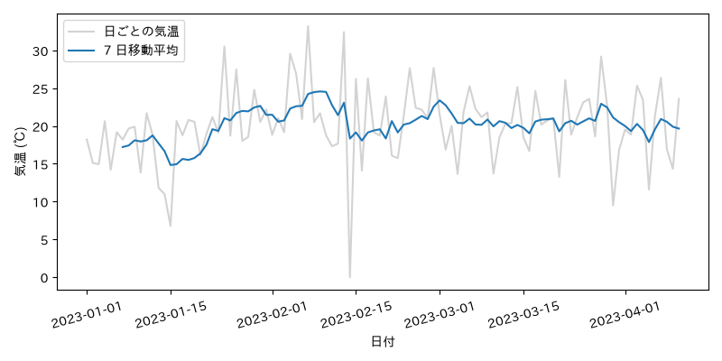
灰色の線が日ごとの気温です. 日ごとの気温は 0 ℃ から 33 ℃ の間で大きく上下していて, この線だけでは全体の傾向が読み取れません. 青い線は, その日までの 7 日間の気温の平均 (移動平均) です. 移動平均では日ごとの上下がならされ, 1 月中旬に最も低く (約 15 ℃), 2 月上旬に最も高く (約 25 ℃) なり, その後は 20 ℃ 前後で推移していることが読み取れます. 月ごとの平均気温 (1 月 18.74 ℃, 2 月 21.44 ℃) の違いとも合っています.
折れ線グラフは, 横軸が時間のように順序と間隔を持つときに使います. 都道府県や商品の種類のように順序の無いカテゴリーを線でつなぐと, 存在しない「変化」を描くことになるので, 棒グラフを使います. 複数の地点の気温を 1 つの図に重ねる方法は, for 文を利用したグラフ (発展)で扱います.
この節に対応する演習は, 章末のExercise DSP3-3とExercise DSP3-4です.
グラフのデザインの変更 (発展)
棒グラフの作成で作った棒グラフ (labels, x_position, values) を使います.
グラフのデザインに関する要素は,無数にあるためこの講義ですべてを扱うことはできませんが,いくつかの要素を実際に変更してみましょう.
色の変更
matplotlibではグラフの各部に以下の色を指定できます. これ以外の指定の仕方もあります.色の変え方は,それぞれのグラフで異なります.
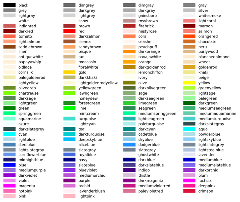
棒グラフはplt.bar(color=棒毎の色のリスト)の形で棒ごとに色を指定することができます.
# 棒グラフの色を指定します.
# 1つ目 red
# 2つ目 blue
# 3つ目 yellow
color_list = ["red", "blue", "yellow"]
# 引数に色の指定をします
plt.bar(color=color_list, x=x_position, height=values)
#ラベルの位置を指定します.
plt.xticks(ticks=x_position,labels=labels)
# yラベルを指定します
plt.ylabel("number")
# タイトルを指名します
plt.title("kind")
# グラフの表示
plt.show()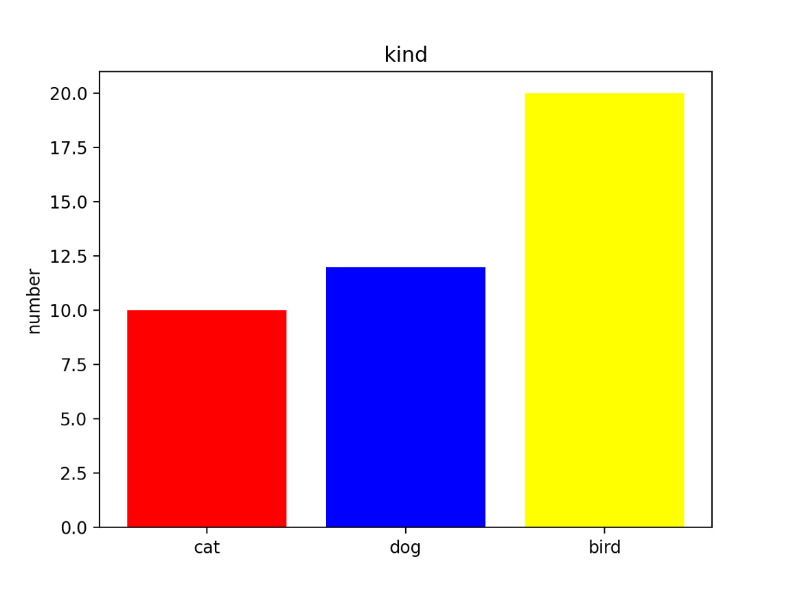
スタイルの変更
毎回細かなデザインを自分で調整すると手間なので,デフォルトで準備されているスタイルを利用すると楽です.
matplotlibではいくつかのデフォルトのスタイルが準備されています. 使用可能なスタイルは,plt.style.available で確認できます.
❯ python
Python 3.12.3 (main, Jun 3 2024, 08:31:31) [Clang 15.0.0 (clang-1500.3.9.4)] on darwin
Type "help", "copyright", "credits" or "license" for more information.
>>> import matplotlib.pyplot as plt
>>> plt.style.available
['Solarize_Light2', 'bmh', 'classic', 'dark_background', 'fast', 'fivethirtyeight', 'ggplot', 'grayscale', 'petroff10', 'petroff6', 'petroff8', 'seaborn-v0_8', 'seaborn-v0_8-bright', 'seaborn-v0_8-colorblind', 'seaborn-v0_8-dark', 'seaborn-v0_8-dark-palette', 'seaborn-v0_8-darkgrid', 'seaborn-v0_8-deep', 'seaborn-v0_8-muted', 'seaborn-v0_8-notebook', 'seaborn-v0_8-paper', 'seaborn-v0_8-pastel', 'seaborn-v0_8-poster', 'seaborn-v0_8-talk', 'seaborn-v0_8-ticks', 'seaborn-v0_8-white', 'seaborn-v0_8-whitegrid', 'tableau-colorblind10']それぞれのスタイルのイメージはこちらで確認できます.
seaborn という名前のスタイルは削除されています
matplotlibにはかつてseabornやseaborn-darkgridという名前のスタイルが同梱されていましたが, これらはseabornライブラリ本体のデザイン更新に追随できなくなったため, matplotlib 3.6 で非推奨となり, 3.8 で削除されました. 現在はseaborn-v0_8,seaborn-v0_8-darkgridのように seaborn-v0_8で始まる名前 に置き換わっています (末尾のv0_8は seaborn 0.8 時代のデザインで固定されていることを表します).
古い解説記事などでplt.style.use('seaborn')という記述を見かけても, そのままではOSErrorになります. plt.style.use('seaborn-v0_8')のように読み替えてください. 最新のseabornのデザインを使いたい場合は, スタイルシートではなくseabornを直接読み込み,sns.set_theme()を利用します.
スタイルはplt.style.use('スタイル名')で指定し,以降のコード全てに適用されます.
# スタイル 'ggplot' を使ってみます
plt.style.use('ggplot')
# 引数に色の指定をします
plt.bar(x=x_position, height=values)
#ラベルの位置を指定します.
plt.xticks(ticks=x_position,labels=labels)
# yラベルを指定します
plt.ylabel("number")
# タイトルを指名します
plt.title("kind")
# グラフの表示
plt.show()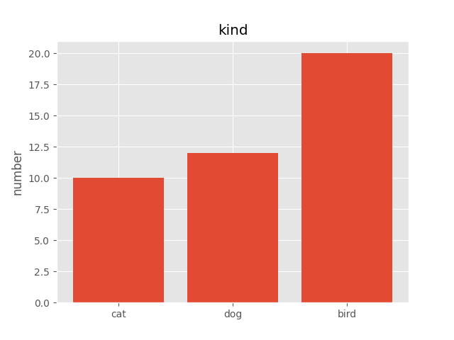
要素の追加
グラフに新しい要素を付け加えるのも簡単です.
plt.show()までの間に,グラフを宣言することで,複数のグラフを重ねることが可能です.
ここでは, 異なる色の棒グラフを追加しています.
また, plt.legend()によって凡例を追加しています.
# スタイル seaborn-v0_8 を使ってみます
plt.style.use('seaborn-v0_8')
# 棒グラフを2つ並べます
plt.bar(color='red', x=x_position, width=0.3,height=values)
plt.bar(color='blue',x=x_position+0.3, width=0.3,height=[11,15,14])
#凡例を追加します
# loc で位置を指定します
# 上下 upper center lower
# 左右 left center right
plt.legend(['2020','2000'], loc='upper left')
#ラベルの位置を指定します.
plt.xticks(ticks=x_position+0.15,labels=labels)
# yラベルを指定します
plt.ylabel("number")
# タイトルを指名します
plt.title("kind")
# グラフの表示
plt.show()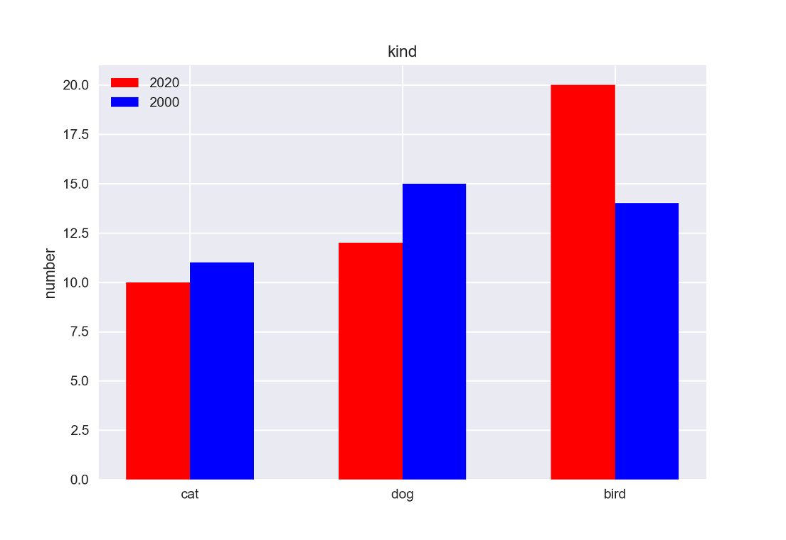
デザインのすべてのパターンをここで扱うことは出来ないので, やりたいことに応じて, matplotlubの公式ドキュメントを確認しましょう.
for 文を利用したグラフ (発展)
これまでのように単純な一つのグラフを作成するだけであれば,恐らくExcelなどのほうが手軽ですが,多数のグラフを作成したり, 複数のデータを組み合わせた複雑なグラフを作成する場合にはプログラミングの方が便利になります.
例えばこちらのデータを利用して棒グラフを作成することを考えてみましょう.このデータは10箇所の気温が記録された時系列データです.
Date Location_1 Location_2 ... Location_8 Location_9 Location_10
0 2023-01-01 18.211700 21.553371 ... 18.665620 29.108637 21.634069
1 2023-01-02 15.108630 16.172744 ... 20.135756 9.212193 24.209877
2 2023-01-03 14.938279 24.593193 ... 16.778431 22.291269 19.815977
3 2023-01-04 20.640249 18.862405 ... 13.282269 16.040627 15.993132
4 2023-01-05 14.218562 16.281882 ... 15.729466 24.951213 18.053277
.. ... ... ... ... ... ... ...
95 2023-04-06 21.312739 19.613363 ... 16.497553 20.446656 13.644605
96 2023-04-07 26.388210 31.533854 ... 18.999736 15.603714 19.215097
97 2023-04-08 16.914329 20.479892 ... 21.698464 17.705697 16.867517
98 2023-04-09 14.316258 17.841650 ... 31.885071 20.816917 16.895196
99 2023-04-10 23.595042 19.896247 ... 17.534881 15.180066 15.104460このデータのLocation_1からLocation_10までの折れ線グラフを一つのグラフに表示することを考えてみます.
matplotlibでは, plt.show()までに要素を重ねることで複数のグラフを重ねることができます.
例えば,10本の折れ線グラフを表示する場合,一つ一つ手書きすると以下のようになります.
df = pd.read_csv('data/temperature_10location.csv')
print(df)
#'Date'列を日付型に変更しています.
df['Date'] = pd.to_datetime(df['Date'])
#一つ一つ手書きする方法
plt.plot(df['Date'],df['Location_1'],label='Location_1')
plt.plot(df['Date'],df['Location_2'],label='Location_2')
plt.plot(df['Date'],df['Location_3'],label='Location_3')
plt.plot(df['Date'],df['Location_4'],label='Location_4')
plt.plot(df['Date'],df['Location_5'],label='Location_5')
plt.plot(df['Date'],df['Location_6'],label='Location_6')
plt.plot(df['Date'],df['Location_7'],label='Location_7')
plt.plot(df['Date'],df['Location_8'],label='Location_8')
plt.plot(df['Date'],df['Location_9'],label='Location_9')
plt.plot(df['Date'],df['Location_10'],label='Location_10')
plt.legend()
plt.xticks(rotation=15) #x軸を15度傾かせています
plt.show()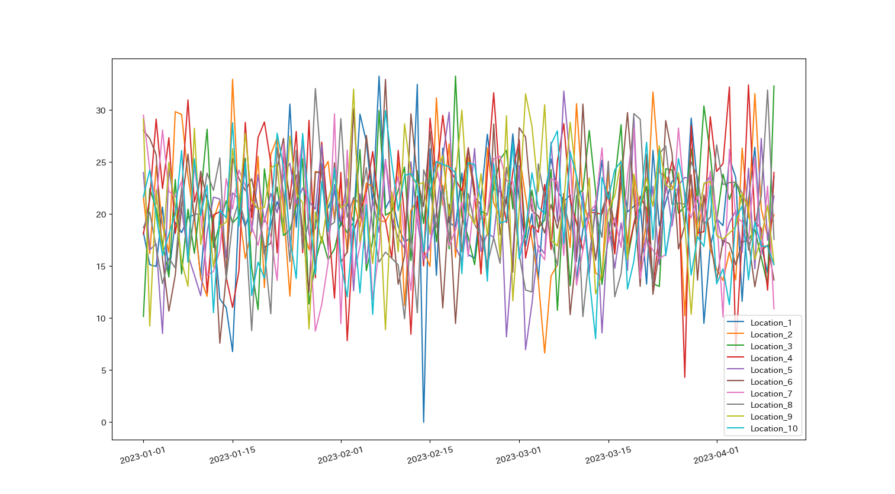
10本程度であれば,まだ書けなくもありませんが,それでも手間がかかります.こういった繰り返しの作業はfor文を利用しましょう.
for文を利用した場合には以下のようになります.
for x in df.columns[1:]:
plt.plot(df['Date'],df[x],label=x)
plt.legend()
plt.xticks(rotation=15)
plt.show()グラフの内容は同じですが,こちらのほうが労力が少なく,コードもスッキリしており,何か修正を加える場合でも修正箇所が少なくて済みます.
繰り返し作業は積極的にfor文やwhile文を利用するようにしましょう.
グラフの分割 (発展)
先程は一つのグラフ内に複数の折れ線グラフを表示しましたが,個別に表示する場合にはどのようになるでしょうか.
一つの方法として,以下の用に複数のグラフを個別に作成することも可能です.
(先に保存先のディレクトリ result/multi_plot を作成しておきましょう.)
for x in df.columns[1:]:
plt.plot(df['Date'],df[x])
plt.title(x)
plt.xticks(rotation=15)
plt.savefig('result/multi_plot/' + x + '.png')
plt.close()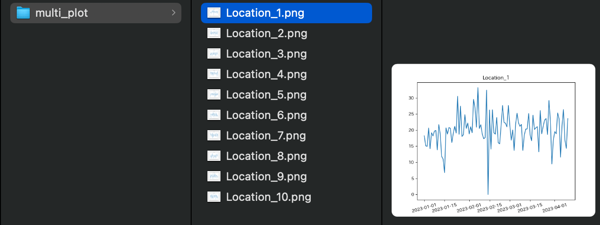
しかし,レポートなどに10枚の画像を貼り付けるのは手間がかかりますし,余白など無駄も多いです.
- subplots()
matplotlibには1枚の画像を分割して複数のグラフを載せるためのメソッド.subplots()があるので,関連するグラフや比較のためのグラフなどはできるだけ1枚の画像に集約しましょう.
.subplots()は1枚の画像をn行,n列に分割し,それぞれの領域にグラフを描画します.
各領域は axesなどと呼ばれ,画像全体をfigureなどと呼びます.
利用するためには,まず fig, axes = plt.subplots()の形で宣言します. 引数として,行数はnrows=,列数はncols=にそれぞれintで指定します.
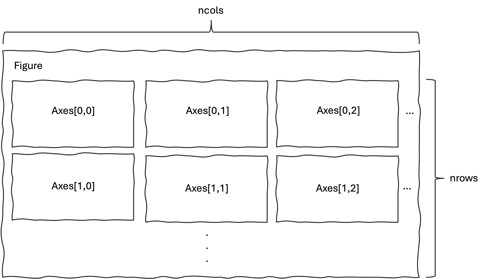
fig, axes = plt.subplots(nrows= 5 #行数の指定
,ncols= 2 #列数の指定
)宣言のあと,各領域のグラフを axes[行,列]の形で指定していきます.行や列は0から始まるので注意してください.
axes[0,0].plot(df['Date'],df['Location_1'],label='Location_1')
axes[0,1].plot(df['Date'],df['Location_2'],label='Location_2')
axes[1,0].plot(df['Date'],df['Location_3'],label='Location_3')
axes[1,1].plot(df['Date'],df['Location_4'],label='Location_4')
axes[2,0].plot(df['Date'],df['Location_5'],label='Location_5')
axes[2,1].plot(df['Date'],df['Location_6'],label='Location_6')
axes[3,0].plot(df['Date'],df['Location_7'],label='Location_7')
axes[3,1].plot(df['Date'],df['Location_8'],label='Location_8')
axes[4,0].plot(df['Date'],df['Location_9'],label='Location_9')
axes[4,1].plot(df['Date'],df['Location_10'],label='Location_10')
plt.show()以下のようなグラフが作成されます. しかし, 少し見にくいですね.
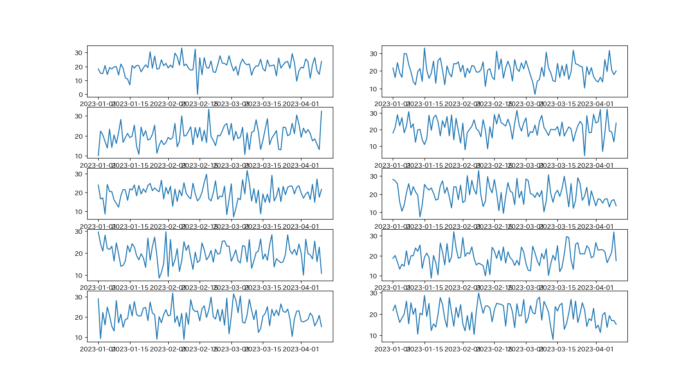
.subplots(sharex=True)とすると,x軸を共有することができます.今回のグラフはx軸がすべて同じなので,共有してみましょう.
また,それぞれのグラフにタイトルを付けてみます.
更に,一つ一つ手で入力するのは手間なのでfor文を利用してみましょう.
タイトルを付けるには今までのplt.title()ではなくaxes[r,c].set_title()になります. axes毎の要素に関しては公式サイトを参考にしてください.

fig, axes = plt.subplots(nrows= 5 #行数の指定
,ncols= 2 #列数の指定
,sharex=True)
count = 0
for i in range(5):
for j in range(2):
col = df.columns[1:]
axes[i,j].plot(df['Date'],df[col[count]])
axes[i,j].set_title(col[count])
axes[i,j].tick_params(axis='x', rotation=15)
count +=1
plt.show()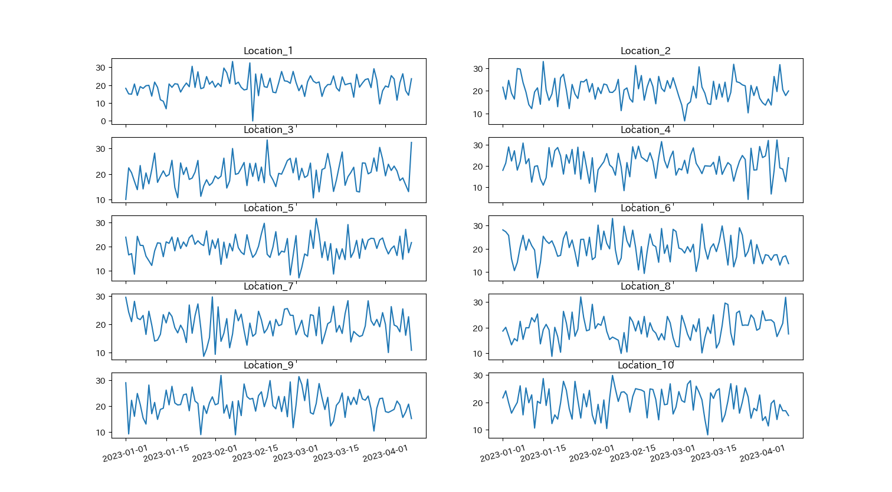
グラフ全体の要素はfig.の形で指定します.
タイトルを付ける場合はfig.suptitle('title')となります.
fig, axes = plt.subplots(nrows= 5 #行数の指定
,ncols= 2 #列数の指定
,sharex=True)
count = 0
for i in range(5):
for j in range(2):
col = df.columns[1:]
axes[i,j].plot(df['Date'],df[col[count]])
axes[i,j].set_title(col[count])
axes[i,j].tick_params(axis='x', rotation=15)
count +=1
fig.suptitle('subplots title')
plt.show()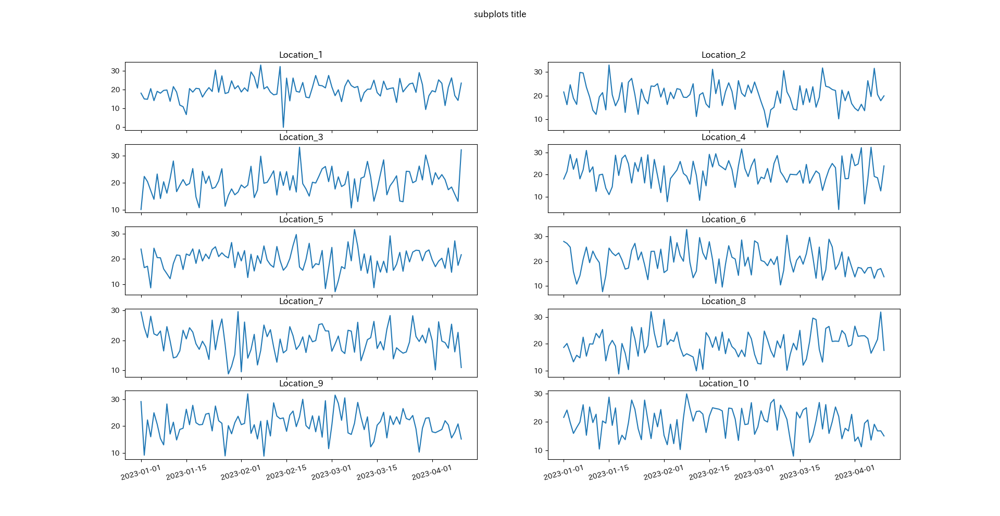
- flatten()
for文を二重ループで記述するのは大変なので,しばしばaxes.flatten()を利用して,連番に変換すると便利です.
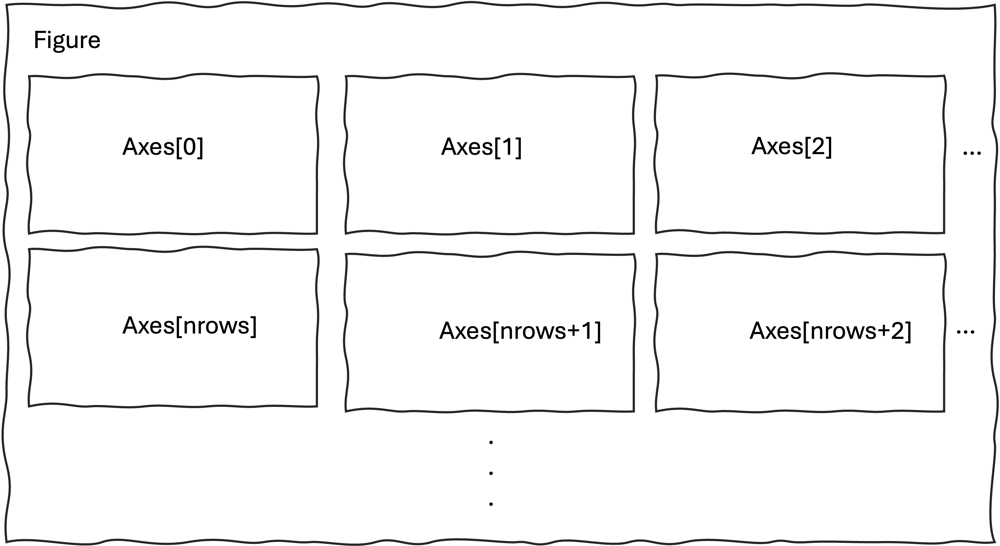
fig, axes = plt.subplots(nrows= 5 #行数の指定
,ncols= 2 #列数の指定
,sharex=True)
#連番に変換
axes = axes.flatten()
for i in range(10):
col = df.columns[1:][i] #countをiで共通化
axes[i].plot(df['Date'],df[col])
axes[i].set_title(col)
axes[i].tick_params(axis='x', rotation=15)
fig.suptitle('subplots title')
plt.show()度数分布表とヒストグラム
データを手に入れたら最初にデータを可視化してデータの特徴を掴む必要があります. データの特徴として重要なものに, データの分布があります.
分布の意味
分布という語の詳細な意味に関しては, 後ほど検定や回帰の章でも簡単に扱いますが, 統計学入門において数理的に詳しく扱っています.
統計学入門を履修していない人はここでは, 単にデータの散らばり具合という意味として捉えておきましょう.
分布を可視化する手法として代表的なものに, 度数分布表と, ヒストグラムがあります. 1 次元のデータの可視化において, 度数分布表とヒストグラムは, データ分析のファーストステップとも称される, 重要な手法です. データを手に入れたらまずは度数分布表と, ヒストグラムを作成してみましょう.
度数分布表
度数分布表とは, データの数を区切られた範囲ごとに数えた表のことです. 質的データの場合はデータのカテゴリーごとに, 量的データの場合は分析者が定めた区間ごとに, データがいくつあるのかを数えます.
普通ヒストグラムというと, 量的データを対象としたものをいいますが, ここではわかりやすさのために, 質的データから見ていきましょう.
以下の表は, 何かしらの商品の美味しさに関するアンケート結果です. 商品を食べて, 「とても美味しい」と回答した人の人数が 9 人, 「不味い」と回答した人の人数が 5 人であることなどがわかります.
このようにデータのカテゴリー別にその値が生じたケースの数を度数といい, 度数を表に整理したものを度数分布表といいます.
| アンケート区分 | 度数 |
|---|---|
| とても美味しい | 9 |
| どちらかといえば美味しい | 11 |
| 普通 | 34 |
| どちらかといえば不味い | 5 |
| 不味い | 5 |
度数の亜種には, 以下のようなものがあり, それぞれによってデータの分布が把握できます.
累積度数:
順序尺度データの度数を少ない方から足し上げた値
相対度数 (構成比率):
度数の総和を100%としたときの構成比率
累積相対度数 (累積比率):
相対度数を上から足し上げた値
| アンケート区分 | 度数 | 累積度数 | 相対度数 | 累積相対度数 |
|---|---|---|---|---|
| とても美味しい | 9 | 9 | 14% | 14% |
| どちらかといえば美味しい | 11 | 20 | 17% | 31% |
| 普通 | 34 | 54 | 53% | 84% |
| どちらかといえば不味い | 5 | 59 | 8% | 92% |
| 不味い | 5 | 64 | 8% | 100% |
| 計 | 64 | 100% |
度数分布表を作成することで, データがどの分類に偏っているのかなど, データの分布の傾向がつかめます. 度数分布表を見る場合には, 相対度数や累積度数からデータが一番多いカテゴリー, 度数データの過半数が属するカテゴリー, データのほとんど (90% 程度) が属するカテゴリーなどに注目してみましょう. 上のデータでは, 最も回答が多いのは「普通」であること, 「とても美味しい」「どちらかといえば美味しい」の回答が, 31% であるのに対して, 「どちらかといえば不味い」「不味い」の回答が 18% であり, 全体的にこの商品の味は高評価側に集中していることなどがわかります.
Python で度数分布表を作成するにはどのようにしたら良いのでしょうか. 質的データの場合は, ただそれぞれの値を数えればいいので for 文などを利用することも可能ですが, pandas の value_counts() メソッドを利用することで簡単に作成できます.
こちらのとある授業の難易度に関する質的データをダウンロードして度数分布表を作成してみましょう.
データは以下のように, 「難しすぎてついていけない」, 「難しいが許容できる」, 「ちょうどよい」, 「簡単だが許容できる」「簡単すぎて退屈」の 5 段階のカテゴリーが記述されています.
Diff
0 難しいが許容できる
1 簡単すぎて退屈
2 難しいが許容できる
3 簡単だが許容できる
4 ちょうどよい
.. ...import pandas as pd
import numpy as np
from matplotlib import pyplot as plt
import matplotlib_fontja
import math
#データの読み込み
df = pd.read_csv('data/diff_class.csv')
print(df)
#ヒストグラムを作りたいデータの列名を指定
target_column = 'Diff'
#度数
freq = df[target_column].value_counts(sort=False)
#順番の入れ替え
freq = freq.reindex(['難しすぎてついていけない'
,'難しいが許容できる'
,'ちょうどよい'
,'簡単だが許容できる'
,'簡単すぎて退屈'],axis='index')
print('度数',freq)
rel_freq = freq / df[target_column].count() # 相対度数
cum_freq = freq.cumsum() # 累積度数
rel_cum_freq = rel_freq.cumsum() # 相対累積度数
dist = pd.DataFrame(
{ "Value": freq.index, #階級値
"Freq": freq, #度数
"Rel": rel_freq, #相対度数
"Cum": cum_freq, #累積度数
"RelCum": rel_cum_freq, #相対累積度数
},
index=freq.index
)
print(dist)
dist.to_csv('frequency_table.csv',)保存された csv(frequency_table.csv) を確認してみると, 度数分布表が作成されていることが確認できます.
| Value | Freq | Rel | Cum | RelCum |
|---|---|---|---|---|
| 難しすぎてついていけない | 2 | 0.02247191 | 2 | 0.02247191 |
| 難しいが許容できる | 44 | 0.494382022 | 46 | 0.516853933 |
| ちょうどよい | 38 | 0.426966292 | 84 | 0.943820225 |
| 簡単だが許容できる | 4 | 0.04494382 | 88 | 0.988764045 |
| 簡単すぎて退屈 | 1 | 0.011235955 | 89 | 1 |
質的データはあらかじめデータのカテゴリーが定められているのでその数を数えるだけで, 度数分布表が作成できました. それでは, カテゴリーが存在しない量的データではどのようにして度数分布表を作成するのでしょうか.
- 量的データと度数分布表
量的データには当てはまるデータを数えるためのカテゴリーが存在しません. 年収のデータを考えた場合, 年収 1 万円ごとに表を作ると 1 から数億まで, 非常に細かくなります. そこで, 量的データで度数分布表を作成するには, 100 万円ごと, 300 万円ごとなどデータをいくつかの区間に分けて, 区間別の度数を数える必要があります. ここで, 作られた区間を階級, 階級の幅を階級幅, 階級を代表する値を階級値といいます. 階級値は大抵の場合, 区間の中間の値が用いられます (100 万円~200 万円の区間だとすると, 150 万円など).
以下の度数分布表は, ある情報クラスの成績 (0-100 点) を 10 点毎に区分したものです. それぞれの点数に当てはまる人数を数えて度数とします.
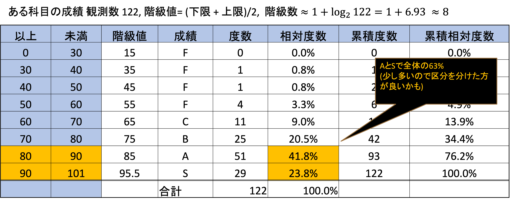
量的データの階級数や階級幅は, 100 万円ごとなどある程度人間の判断によって作成しても構いませんが, 数理的に決定する方法もあります.
階級幅は階級数が決まることで自動的に決まるため, 階級数を決める一般的な目安として, スタージェスの公式が利用されます.
観測数を n, 階級数を k とすると.
k = 1 + log_2 n = \frac{log_{10} n}{log_{10} 2}
程度の k が望ましいとされています.
計算結果はおおよそ以下のようになります.
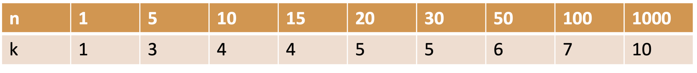
Python ではスタージェス数は対数計算をするためのモジュール math を利用して以下のように求めることができます.
# 2進対数を返す math.log2() 関数などを利用するために必要なモジュール
import math
# 関数名を sturgesNumber として引数をnとします
def sturgesNumber(n):
# 公式の通り k = 1 + log2 n
# 階級数は整数が良いので,math.floor()で小数点以下を切り捨てます
return (math.floor (1 + math.log2(n)))
print(sturgesNumber(2048)) #>>> 12階級数が決まることで階級幅が \frac{(データの最大値 - データの最小値)}{階級数}
として決まります.
それでは, こちらのデータを利用して, 度数分布表を作成してみます. 量的データの度数分布表を作成するには, value_counts() の引数 bins= に各階級の終点を表すリストを指定します.
#ヒストグラムを作りたいデータの列名を指定
target_column = 'Values'
# 関数名を sturgesNumber として引数をnとします
def sturgesNumber(n):
# 公式の通り k = 1 + log2 n
# 階級数は整数が良いので,math.floor()で小数点以下を切り捨てます
return (math.floor (1 + math.log2(n)))
# dataフォルダにあるhistogram_quantitative.csvというファイルを読み込みます.
df = pd.read_csv("data/histogram_quantitative.csv")
# 読み込んだファイルの中身を見てみます.
print(df)
#階級数を決定
stnum = sturgesNumber(len(df[target_column]))
print('sturges number:',stnum)
#階級幅を決定
space = int((df[target_column].max() - df[target_column].min()) / stnum)
print('space:',space)
#階級幅の終端を指定
bins = np.arange(start = int(df[target_column].min()) - 1 #最小値
,stop = int(df[target_column].max()) + 1 #最大値
,step = space #階級幅
)
print('bins:',bins)
#度数
freq = df[target_column].value_counts(bins =bins, sort=False)
print('度数',freq)
rel_freq = freq / df[target_column].count() # 相対度数
cum_freq = freq.cumsum() # 累積度数
rel_cum_freq = rel_freq.cumsum() # 相対累積度数
dist = pd.DataFrame(
{ "Value": freq.index, #階級値
"Freq": freq, #度数
"Rel": rel_freq, #相対度数
"Cum": cum_freq, #累積度数
"RelCum": rel_cum_freq, #相対累積度数
},
index=freq.index
)
print(dist)
dist.to_csv('frequency_table_qualitative.csv'
,encoding='utf-8-sig'
,index=False)結果作成された, frequency_table_qualitative.csv を開いてみると, 以下のような度数分布表が作成されたことが確認できます.
| Value | Freq | Rel | Cum | RelCum |
|---|---|---|---|---|
| (8.999, 18.0] | 1 | 0.01 | 1 | 0.01 |
| (18.0, 27.0] | 5 | 0.05 | 6 | 0.06 |
| (27.0, 36.0] | 11 | 0.11 | 17 | 0.17 |
| (36.0, 45.0] | 21 | 0.21 | 38 | 0.38 |
| (45.0, 54.0] | 27 | 0.27 | 65 | 0.65 |
| (54.0, 63.0] | 20 | 0.2 | 85 | 0.85 |
| (63.0, 72.0] | 9 | 0.09 | 94 | 0.94 |
度数分布表の可視化:ヒストグラム
ここまでで, データの分布, 偏りを把握する手段としての度数分布表を学びました. 度数分布表を眺めることである程度データの形は分かりますが, よりわかりやすく可視化する方法としてヒストグラムがあります.
ヒストグラム (Histogram)/柱状図とは, 量的データの度数分布を棒グラフで表現したものです. ただし, 通常の棒グラフと異なり値が連続しているので, 棒と棒の間にスペースを置きません. 統計における最も基本的なグラフです.
ヒストグラムはいくつかの代表的なパターンがあり, それぞれ注意するべきポイントがありますので, 順に見ていきましょう.
単峰型 (unimodal) で左右対称
ヒストグラムの盛り上がっている部分を峰といいます. 峰の数が一つのヒストグラムを単峰 (unimodal)なヒストグラムといいます.
ヒストグラムの基本となる形は, 単峰で左右対称な分布です. この分布は, データが同質な集団から発生していることを表しています.
- 例:同じ人種の, 同じ年代の, 男性の集団の身長
- 例:同じ種類, 同じ時期, 同じ地域のうさぎの集団のサイズ峰からの左右のデータのばらつきは集団の個体差を表しています. 異なる, 質を持つ集団が混じっている場合は峰が複数になることが多いです.
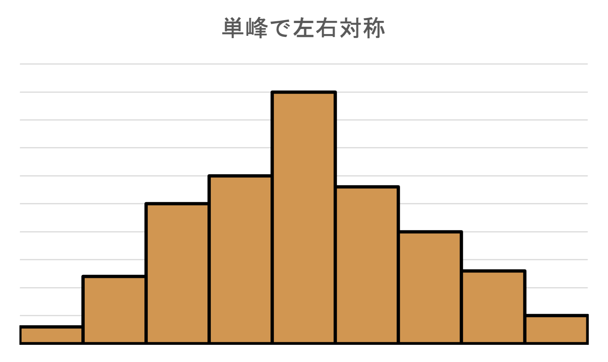
多峰型 (multimodal) のヒストグラム
峰が 2 つ以上あるヒストグラムを多峰 (multimodal) なヒストグラムといいます (峰が 2 つのものは特に二峰 (bimodal) といいます). 異質な集団が混ざっているデータでは, ヒストグラムが多峰になることがあります.
- 例:男女の混ざった集団の身長や体重
男性の峰と女性の峰が現れます.
- 例:小学生と中学生が同じテストを受けたときの点数
小学生の点数の峰と,中学生の点数の峰が現れます.ヒストグラムを作成し, 多峰性が現れたらデータを集団別・要因別に分割して分析するのが良いとされています. データを特定の属性で分割することを層別といいます.
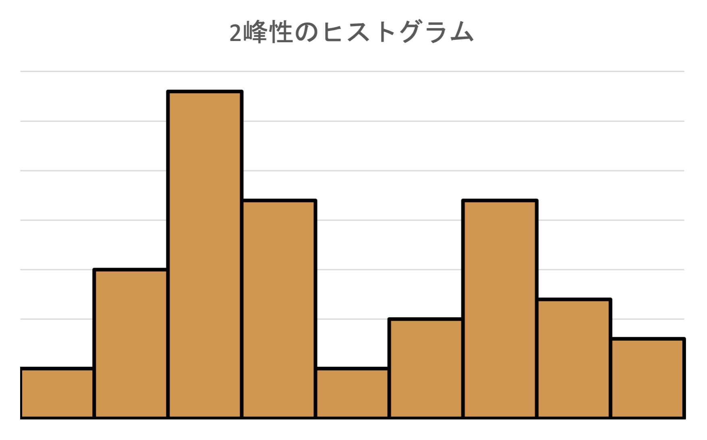
左右非対称なヒストグラム
ヒストグラムは峰を中心として左右対称な場合もありますが, どちらかの方向に歪んでいるものも良く見られます.
- 例:社会人の年収, 企業の売上などヒストグラムの細くなっている部分をヒストグラムの尾といいます.
- **尾が**左に伸びている場合に **左に歪んだ分布**
- **尾が**右に伸びている場合に **右に歪んだ分布**といいます.
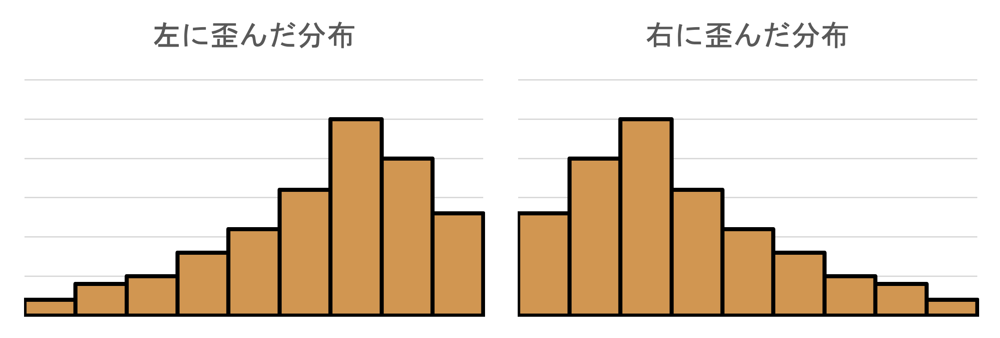
左右に歪んだ分布では, 後に扱う中心を表す代表値(平均値や中央値) が適切に集団を代表しない場合があるので, 代表値の使い分けが必要になります.
また, 後に扱う検定手法のうち, 正規分布を仮定する検定が利用できないなど, 手法の選択において, 分布の歪みは重要なポイントです.
外れ値 (Outlier)のあるヒストグラム
大多数のデータとは離れた位置にある少数のデータを外れ値 (Outlier)といいます.
外れ値は, データ分析において非常に重要な意味を持ち, 外れ値が現れた場合にはその原因を探ることが必要となります. 外れ値が発生する原因としては以下のようなものがあり, いずれも注目する必要があります.
- データの取得におけるミス
単純な入力ミスや計算ミスなど
発見した場合は修正,除外する必要がある.
- 異質な存在の発見
新種や新しい現象の発見などにつながる可能性があります.また, 代表値の計算においては歪みが生じる可能性があるので, 外れ値を除外する必要があります.
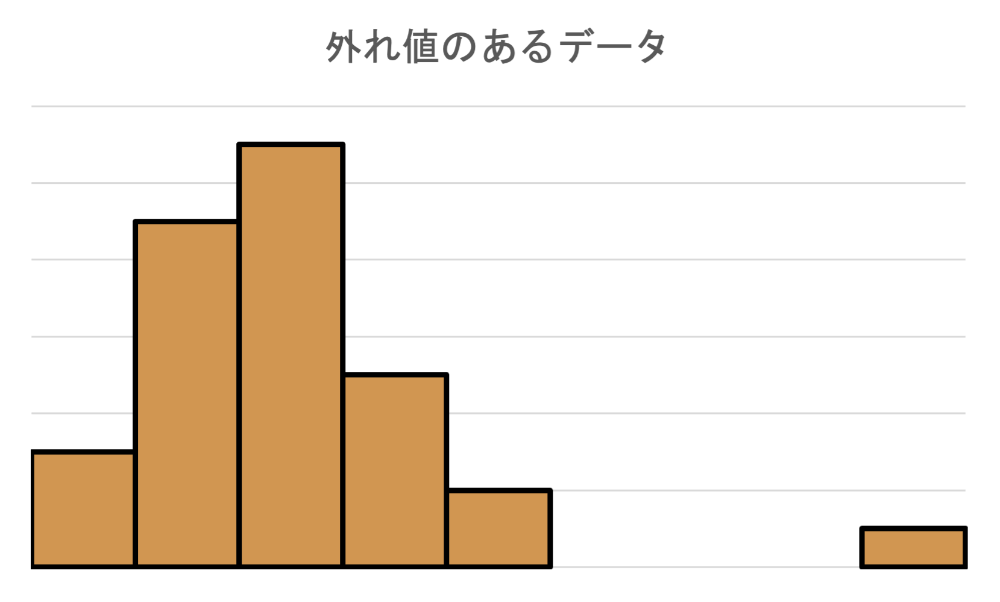
それでは, Python で度数分布表をグラフにしてみましょう. 度数分布表がある場合は, 棒グラフを作り棒の間隔を 0 にすることで, 棒を詰めたグラフ (量的データならヒストグラム) が作成できます.
plt.bar() では, 引数 width=1 を与えることで, 棒の太さを 1 (棒の間を 0) にすることができます.
まずは, 以前扱った順序尺度の質的データの例を描いてみましょう. 前述のとおり順序尺度には階級幅の概念が無いため, これは厳密にはヒストグラムではありませんが, 順序があるので棒を詰めて描くと分布の歪みなどを読み取れます.
#データの読み込み
df = pd.read_csv('data/diff_class.csv')
print(df)
#ヒストグラムを作りたいデータの列名を指定
target_column = 'Diff'
#度数
freq = df[target_column].value_counts(sort=False)
#順番の入れ替え
freq = freq.reindex(['難しすぎてついていけない'
,'難しいが許容できる'
,'ちょうどよい'
,'簡単だが許容できる'
,'簡単すぎて退屈'],axis='index')
print('度数',freq)
rel_freq = freq / df[target_column].count() # 相対度数
cum_freq = freq.cumsum() # 累積度数
rel_cum_freq = rel_freq.cumsum() # 相対累積度数
dist = pd.DataFrame(
{ "Value": freq.index, #階級値
"Freq": freq, #度数
"Rel": rel_freq, #相対度数
"Cum": cum_freq, #累積度数
"RelCum": rel_cum_freq, #相対累積度数
},
index=freq.index
)
print(dist)
dist.to_csv('frequency_table.csv',encoding='utf-8-sig',index=False)
# ヒストグラム
plt.bar(x=dist['Value'], height=dist["Freq"],width=1)
plt.xticks(np.arange(len(dist)),list(dist.index),rotation=15)
plt.show()以下のように, 単峰で右に歪んだグラフが作成されるはずです.
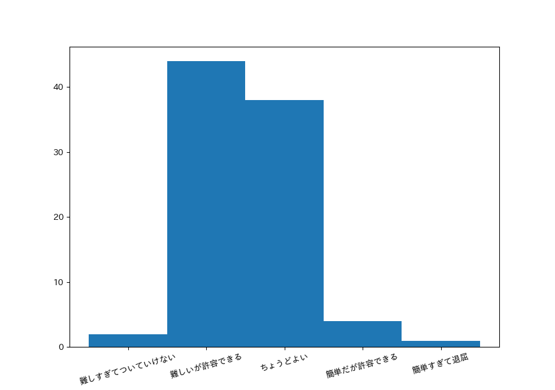
同様に量的データについても作成してみます.
#ヒストグラムを作りたいデータの列名を指定
target_column = 'Values'
# 関数名を sturgesNumber として引数をnとします
def sturgesNumber(n):
# 公式の通り k = 1 + log2 n
# 階級数は整数が良いので,math.floor()で小数点以下を切り捨てます
return (math.floor (1 + math.log2(n)))
# dataフォルダにあるhistogram_quantitative.csvというファイルを読み込みます.
df = pd.read_csv("data/histogram_quantitative.csv")
# 読み込んだファイルの中身を見てみます.
print(df)
#階級数を決定
stnum = sturgesNumber(len(df[target_column]))
print('sturges number:',stnum)
#階級幅を決定
space = int((df[target_column].max() - df[target_column].min()) / stnum)
print('space:',space)
#階級幅の終端を指定
bins = np.arange(start = int(df[target_column].min()) - 1 #最小値
,stop = int(df[target_column].max()) + 1 #最大値
,step = space #階級幅
)
print('bins:',bins)
"""
階級が整数では大きすぎる場合は,
np.arrange()では上手く出来ません.
while文などで,以下のように自作しましょう.
space = (data.max() - data.min()) / step
current = data.min() -1
bins = [current]
while current <= data.max() +1:
current += space
bins.append(current)
"""
#度数
freq = df[target_column].value_counts(bins =bins, sort=False)
print('度数',freq)
rel_freq = freq / df[target_column].count() # 相対度数
cum_freq = freq.cumsum() # 累積度数
rel_cum_freq = rel_freq.cumsum() # 相対累積度数
dist = pd.DataFrame(
{ "Value": freq.index, #階級値
"Freq": freq, #度数
"Rel": rel_freq, #相対度数
"Cum": cum_freq, #累積度数
"RelCum": rel_cum_freq, #相対累積度数
},
index=freq.index
)
print(dist)
dist.to_csv('frequency_table_qualitative.csv'
,encoding='utf-8-sig',index=False)
# ヒストグラム
## dist['Value']は文字列でないので,
## .astype(str) で文字列に変換しています.
plt.bar(x=dist['Value'].astype(str)
,height=dist["Freq"],width=1)
plt.xticks(np.arange(len(dist)),list(dist.index),rotation=15)
plt.show()以下のように単峰で左に歪んだヒストグラムが作成されます.
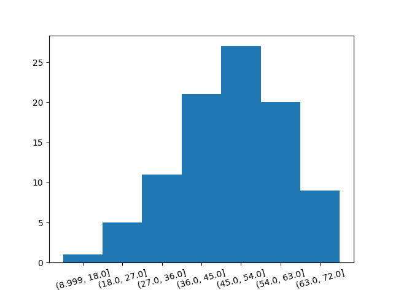
一方で, 量的データに関しては, 度数分布表を作成せずとも matplotlib の plt.hist() を利用して直接作成することも可能です.
plt.hist() では bins= に階級数を指定することで, その階級数で自然に分割したヒストグラムを作成してくれます.
# ヒストグラムの作成
label = df.columns[0]
values = df[label]
plt.hist(values, bins=stnum)
plt.show()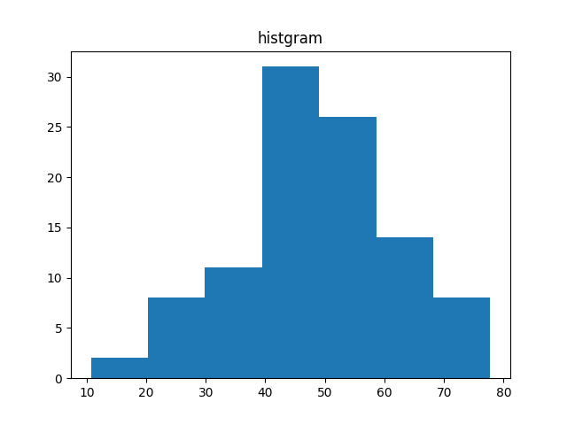
階級幅の設定によって, 見た目が変わることが分かります. 作成手法や階級の設定は目的に応じて, 使い分けるようにしましょう.
この節に対応する演習は, 章末のExercise DSP3-5です.
カーネル密度プロット (発展)
データの分布を表現する手法としてヒストグラムは非常に便利ですが,階級数や階級幅を自分で定める必要があり,その設定によって見た目が変わってしまいます. また, データ数が少ないときには正確なデータの分布をつかめないという問題点もあります.
そこで, データを階級で区分せずに,度数ではなく確率密度を直接推定する手法にカーネル密度推定(Kernel Density Estimation, KDE)があります.
カーネル密度推定では, 一つ一つのデータ点の上にカーネルと呼ばれる小さな山(多くはガウス関数)を置き, それらをすべて足し合わせて1本のなめらかな曲線をつくります. データ点 x_1, x_2, \dots, x_n に対する密度の推定値 \hat{f}(x) は次の式で表されます.
\hat{f}(x) = \frac{1}{nh}\sum_{i=1}^{n} K\!\left(\frac{x - x_i}{h}\right)
ここで K はカーネル関数(山の形)を, h はバンド幅(bandwidth)と呼ばれるなめらかさを決めるパラメータを表します. h を小さくするとデータ点ごとの凹凸が強く出て, 大きくするとよりなめらかになります. ヒストグラムにおける階級幅と同じような役割を持つ量です.
seabornでは.histplot()の引数kde=Trueを指定することで, ヒストグラムに重ねてカーネル密度推定の曲線を描くことができます. ここでは, ヒストグラムの節で用いた量的データを使ってみましょう.
df = pd.read_csv('data/histogram_quantitative.csv')
# stat='density' で縦軸を度数から密度(棒の面積の合計が1)に変換します.
# kde=True を渡すと, ヒストグラムに重ねてカーネル密度推定の曲線が描かれます.
sns.histplot(df['Values'], stat='density', kde=True)
plt.xlabel('Values')
plt.show()
plt.close()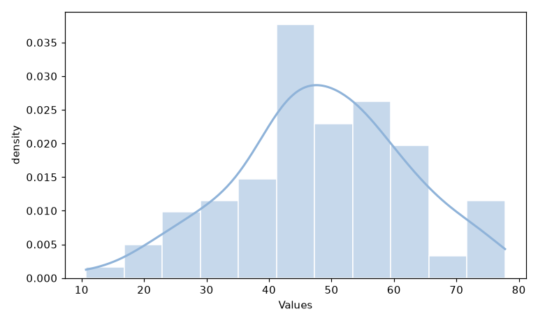
ヒストグラムの階段状のグラフと異なり, 分布のなめらかな形をつかむことができます. 曲線だけを描きたい場合はsns.kdeplot(df['Values'])とします. ただし, カーネル密度推定はあくまで手元のデータからの推定であり, バンド幅の取り方によって形が変わる点には注意しましょう.
箱ひげ図
データの観測対象が複数のグループに層別可能な場合には, それぞれのヒストグラムを作成して比較することなどが必要です. グループの数が多い場合には, 何個もヒストグラムを作成することになりますし, 比較には向いていない場合があります. そのような複数のグループの分布を比較する際に良く用いられるグラフが, 箱ひげ図です.
こちらのデータは, 複数の種類の馬鈴薯のサイズがまとまっています.
試しに, 馬鈴薯の種類ごとのヒストグラムを作成してみます.
df = pd.read_csv('data/boxplot_data_300.csv')
#馬鈴薯の種類を抜き出す
types = list(set(df['Type']))
print(types)
#馬鈴薯の種類別にヒストグラムを作成してみる
fig, ax = plt.subplots(ncols=2
,nrows=int(len(types) / 2) + 1
,sharex = True)
axes = ax.flatten()
fig.suptitle('Potato Weight')
for i in range(len(types)):
t = types[i]
df_temp = df[df['Type'] == t]
axes[i].hist(df_temp['Weight'])
axes[i].set_title(t)
plt.show()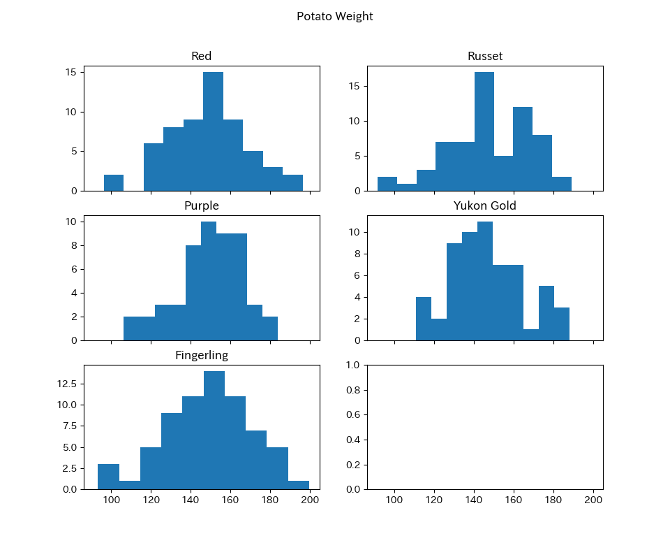
これでも比較はできますが 1 枚の画像にまとめる手段として, 箱ひげ図が利用できます.
箱ひげ図は plt.boxplot(データのリスト, tick_labels=ラベルのリスト) で生成できます (matplotlib 3.9 より前の版では tick_labels= の代わりに labels= を使います).
data = [df[df['Type']==x]['Weight'] for x in types]
"""
#内包表記を利用しない場合は
data = []
for x in types:
data.append(df[df['Type']==x]['Weight'])
"""
print(data)
plt.boxplot(data, tick_labels=types)
plt.show()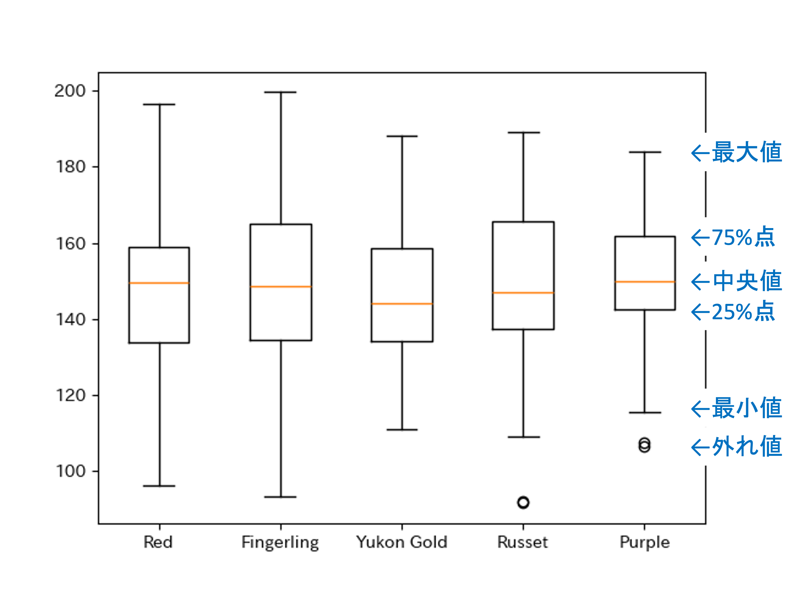
箱ひげ図の箱は, 上から 75% 点, 中央値 (箱の中の線), 25% 点 を表します. ひげは箱から上下に伸び, 箱の長さ (四分位範囲) の 1.5 倍以内にあるデータの最大値と最小値まで引かれます. その範囲の外にあるデータは外れ値として丸で表されます.
ヒストグラムと比較して情報量は減りますが, 一覧性と比較においては優れています. それぞれ一長一短なので, 用途に応じて使い分けるようにしましょう.
散布図
これまではデータの各観測項目を独立に可視化してきました. 複数の観測項目の関係性を可視化する代表的な手法に散布図があります.
こちらのデータは Google トレンドにおける同時期の AI というワードの検索量と, Python というワードの検索量を表しています.
AI Python
0 34 27
1 40 26
2 59 28
3 46 29
4 36 29
.. .. ...
255 58 83
256 69 87
257 59 82
258 62 84
259 59 87この 2 つの検索量がどのような関係にあるのかを散布図を用いて確認してみましょう.
散布図は plt.scatter(x軸の値のリスト,y軸の値のリスト) の形で作成できます.
df = pd.read_csv('data/scatter.csv')
#散布図のx軸を指定
x_column = 'AI'
#散布図のy軸を指定
y_column = 'Python'
x_value = df[x_column]
y_value = df[y_column]
plt.scatter(x_value, y_value)
plt.ylabel(y_column)
plt.xlabel(x_column)
plt.show()
散布図を見ると, AI に関する検索量が増えるにつれて, Python の検索量が増えるという関係が見えてきます.
この関係の度合いを数値化する相関係数や, 関係の仕方を説明する回帰分析に関しては後ほど扱います.
この節に対応する演習は, 章末のExercise DSP3-3です.
観測項目が複数ある場合の散布図 (発展)
データが 3 つある場合には, 以下のように 3D で表現することも可能ですがこの講義では, 3 次元のグラフに関しては深く扱いません. 興味のある方は調べてみましょう.
x = np.random.rand(100)
y = np.random.rand(100)
z = np.random.rand(100)
fig = plt.figure()
ax = fig.add_subplot(projection='3d')
ax.scatter(x, y, z, color='blue')
plt.show()
plt.close()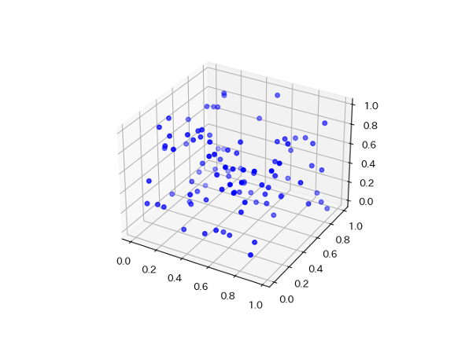
観測項目が 4 つ以上ある場合に散布図のように関係を表す手法としては, 複数の観測項目の値を合成して 3 次元以下にする次元削減が良く利用されます. 次元削減に関しては後ほど扱うとして, ここではいくつかの観測項目を色や大きさなどの要素に変換して関係を見る方法を紹介します.
plt.scatter() では s= に数値を与えることでサイズ, c= に数値を与えることで色を指定できます.
また, 色と数値の関係は plt.colorbar() で表示可能です.
複数の点が重なると見にくくなるために alpha= に 0-1 の間の数値を指定して透明度を指定することができます.
x = np.random.rand(100)
y = np.random.rand(100)
z = np.random.rand(100)
#色とサイズをzで指定する
#そのままだとサイズが小さすぎるので,100倍している
plt.scatter(x,y,alpha=0.5,s=z*100,c=z)
plt.colorbar() #カラーバーの表示
plt.show()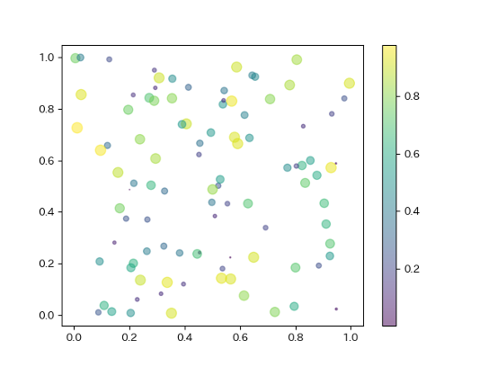
クラスタリングにおける散布図 (発展)
散布図は複数の観測項目間の関係性を可視化するための手法ですが, データから特定の観測対象の集まり (クラスター) を発見するクラスタリングとも深い関わりがあります. クラスタリングの手法は後ほど扱いますが, ここでは可視化手法としての散布図とクラスタ表現の関係に関して確認してみましょう.
こちらのデータには, クラスタリングによって得られたクラスタごとのラベルが付いています.
x y Cluster
0 -8.149818 -9.152380 2
1 5.860155 0.126873 1
2 -3.213409 9.828126 0
3 6.744070 -0.129607 1
4 -6.342946 -6.038933 2
.. ... ... ...
95 -3.524581 9.931801 0
96 -0.962698 10.411206 0
97 4.397950 2.579246 1
98 -5.255050 -5.299407 2
99 -3.768024 8.550468 0クラスタを表すには, .scatter() の引数 c= で色を指定するのが一般的です.
df = pd.read_csv('data/scatter_class.csv')
color_list = ["red", "blue", "yellow"]
#散布図をクラスタごとに色を変えて表示
for i in range(3):
df_temp= df[df['Cluster'] == i]
plt.scatter(df_temp['x']
,df_temp['y']
,c=color_list[i]
,label='Cluster:' + str(i))
plt.legend()
plt.show()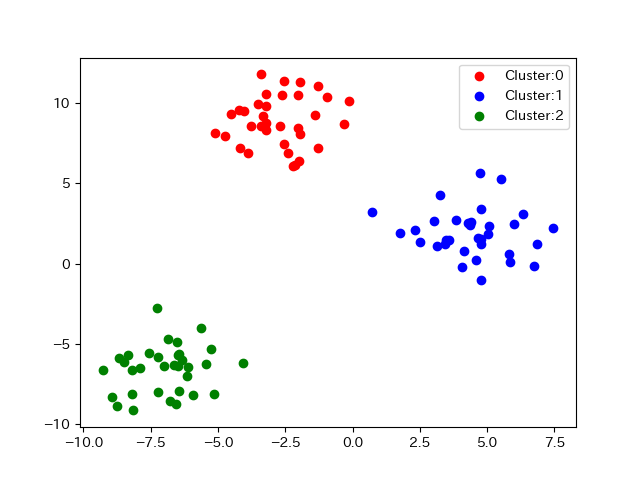
散布図行列(ペアプロット)
散布図は 2 つの量的データの関係を見る手法でしたが, 観測項目が 3 つ以上あると, どの項目とどの項目の間に関係があるのかを一枚の散布図では表せません. そこで, すべての量的データの組み合わせについて散布図を一度に並べたものが散布図行列 (ペアプロット)です.
積み上げ棒グラフで使った都道府県別のデータ (こちら) で, 平均身長 (height), 体重 (weight), 食費 (food), 睡眠時間 (sleep), 運動時間 (sports) の散布図行列を描きます (pref 列が都道府県名).
height weight food sleep sports
pref
北海道 170.4 63.7 65739 477 15
青森県 169.8 62.8 64889 490 13
岩手県 170.6 63.7 70156 489 13
.. ... ... ... ... ...
鹿児島県 169.7 61.4 65377 479 18
沖縄県 168.7 60.6 56298 482 20散布図行列は seaborn の .pairplot() メソッドを使うと, データフレームを渡すだけで作成できます. 数値の列がすべて自動的に対象になります.
# pref 列を見出し(index)として読み込みます.
# このファイルはBOM付きUTF-8なので encoding='utf-8-sig' を指定します.
df = pd.read_csv('data/pref_stats.csv', encoding='utf-8-sig', index_col='pref')
# データフレームを渡すだけで,全組み合わせの散布図が作成されます.
sns.pairplot(df)
plt.show()
plt.close()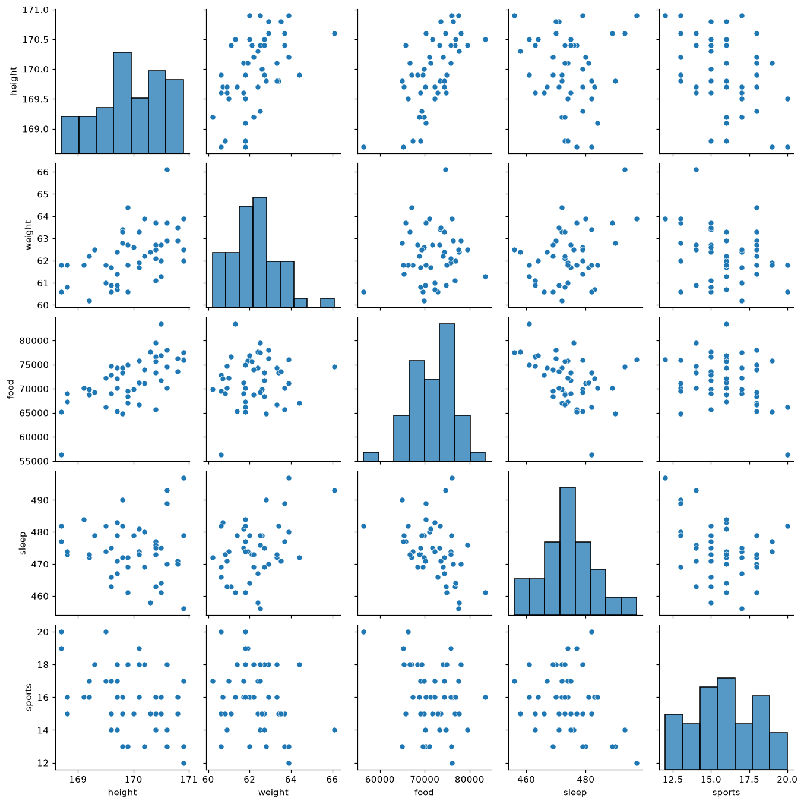
対角線上には各項目単体のヒストグラムが, 対角線以外にはその行と列の項目を軸にした散布図が並びます. これによって, 例えば「食費 (food) が多い都道府県ほど平均身長 (height) が高い傾向がある」といった項目間の関係を, 一度に見渡すことができます.
各組み合わせの関係の強さを数値で表す方法 (相関係数) は, 第4章で詳しく扱います.
ヒートマップ
ヒートマップとは, 表形式の数値を各セルの色によって表現する可視化手法です. 2 つの質的データの組み合わせごとに数えた表 (同時度数分布表) のような, 数値の並んだ表を一目で読めるようにします.
こちらのデータは, ある講義の学生ごとに, 受講した時限 (Period, 1〜5 時限) と成績 (Grade, S, A, B, C, F) を記録したものです. 時限ごとに各成績の学生が占める割合の表を作り, ヒートマップにします. 表の作り方は同時度数分布表 (発展)で詳しく扱います.
df = pd.read_csv('data/cross_table_data.csv')
# 成績 (行) と時限 (列) の組み合わせごとに数え,
# normalize='columns' で各列 (時限) の合計が 1 になる割合に直します.
cross = pd.crosstab(df['Grade'], df['Period'], normalize='columns')
cross = cross.reindex(['S','A','B','C','F'], axis='index')
print(cross)Period 1 2 3 4 5
Grade
S 0.195652 0.227273 0.37500 0.111111 0.047619
A 0.152174 0.318182 0.21875 0.138889 0.095238
B 0.195652 0.227273 0.21875 0.305556 0.166667
C 0.304348 0.136364 0.09375 0.416667 0.428571
F 0.152174 0.090909 0.09375 0.027778 0.261905ヒートマップは seaborn の .heatmap() を利用することで簡単に作成できます.
sns.heatmap( cross #ヒートマップを作成したいテーブル
, cmap=plt.get_cmap('Reds') #カラーマップ(省略可)
, linewidths=.5 #線の太さを指定することでセルを囲う線を表示
, annot=True #セルに数値を表示
)
plt.show()
このヒートマップでは, 数値が大きいほど, 色が濃くなっており 2, 3 時限において B 以上の成績を取る学生の割合が大きいこと, 4, 5 時限において C や F などの成績を取る人の割合が大きいことが視覚的に分かります.
ヒートマップは複数の数値間の相関係数や距離を可視化する際にも良く用いられるので, 覚えておきましょう.
この節に対応する演習は, 章末のExercise DSP3-3です.
変数の関係を図で表す (発展)
散布図行列やヒートマップは, 変数の組ごとの関係を並べて見せます. 変数が多くなると, どの変数がどの変数とつながっているかという全体の構造は, これらの図からは読み取りにくくなります. そこで, 変数を楕円 (ノード) で, 変数の間の関係を線 (エッジ) で表す図を描きます.
ここでは, 都道府県別のデータの 5 つの変数について, 相関係数 (第4章で扱う, 2 つの量的データの直線的な関係の強さを -1 から 1 で表す指標) の絶対値が 0.3 以上の組を線で結びます. 図の作成には, グラフ (ノードとエッジからなる図) を描くソフトウェア Graphviz を Python から使うライブラリ graphviz を使います. uv add graphviz に加えて, Graphviz 本体のインストール (macOS なら brew install graphviz, Windows なら公式サイトのインストーラ) が必要です.
import pandas as pd
import graphviz
df = pd.read_csv('data/pref_stats.csv', encoding='utf-8-sig', index_col='pref')
corr = df.corr() # 5 つの項目の, すべての組み合わせの相関係数
names = {'height': '身長', 'weight': '体重', 'food': '食費'
,'sleep': '睡眠時間', 'sports': '運動時間'}
g = graphviz.Graph(format='png') # 向きの無い線で結ぶ図
g.attr(dpi='150') # 画像の解像度
g.attr('node', fontname='Hiragino Sans', shape='ellipse')
g.attr('edge', fontname='Hiragino Sans')
for col, label in names.items():
g.node(col, label)
cols = list(names)
for i in range(len(cols)):
for j in range(i + 1, len(cols)):
r = corr.loc[cols[i], cols[j]]
if abs(r) >= 0.3: # 相関係数の絶対値が 0.3 以上の組だけ線で結ぶ
g.edge(cols[i], cols[j]
,label=f'{r:.2f}'
,style='solid' if r > 0 else 'dashed' # 負の相関は破線
,penwidth=str(1 + 4 * abs(r))) # 強い相関ほど太く
g.render('pref_corr_graph', cleanup=True) # pref_corr_graph.png が保存されますfontname='Hiragino Sans' は macOS の日本語フォントです. Windows では 'Yu Gothic' などに替えます.
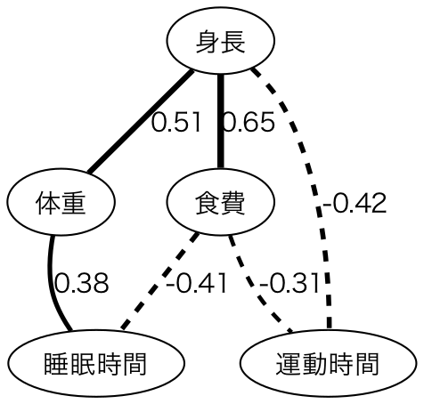
身長は食費 (0.65), 体重 (0.51) と正の相関で, 運動時間 (-0.42) と負の相関で結ばれ, 5 つの変数の中で最も多くの線が集まります. 睡眠時間は体重と正の相関 (0.38), 食費と負の相関 (-0.41) を持ちます. 散布図行列では 10 組の散布図を 1 つずつ見比べる必要がありましたが, この図では関係の強い組と, 関係が集まる変数を一度に見渡せます.
この図の線は相関を表すだけで, どちらがどちらに影響するかという向きは表していません. 変数の間の影響の向きを仮説として矢印で描いた図はパス図と呼ばれ, パス図の仮説をデータで確かめる手法が, 第13章で扱う共分散構造分析です.
縦軸と横軸の選び方
同じデータでも, 縦軸と横軸に何を取るかで読み取れることが変わります. そのため, 図を描く前に, 問いに対して軸の候補を書き出します. 積み上げ棒グラフで使った都道府県別のデータで, 問い「運動時間は地域によって違うか」に対する候補を書き出すと, 次のようになります.
| 軸 | 候補 | 読み取りやすいこと |
|---|---|---|
| 横軸 | 都道府県 (北から南の順) | 地理的な並びに沿った変化 |
| 横軸 | 都道府県 (運動時間の長い順) | 順位, 上位と下位の都道府県 |
| 横軸 | 地方 | 地方単位の違い |
| 縦軸 | 運動時間 (分) | 各都道府県の水準 |
| 縦軸 | 階級ごとの都道府県数 | 地方の中の内訳 (合計は地方の都道府県数に左右される) |
| 縦軸 | 階級ごとの都道府県数の割合 | 都道府県数の違う地方同士の内訳の比較 |
候補を並べたら, 問いに答えられる組み合わせを選びます. 以降の図を描くために, 積み上げ棒グラフと同じ手順でデータを読み込み直します. 誇張と強調が読み取りに与える影響のコードも, この df と order を使います.
df = pd.read_csv('data/pref_stats.csv', encoding='utf-8-sig')
region = pd.read_csv('data/pref_region.csv', encoding='utf-8-sig')
# pref 列が一致する行同士をつないで, 地方の列を加えます.
df = df.merge(region, on='pref')
# 運動時間を 3 つの階級に分けます. (0, 14], (14, 17], (17, 60] の区間になります.
df['sports_class'] = pd.cut(df['sports']
,bins=[0, 14, 17, 60]
,labels=['14分以下', '15〜17分', '18分以上'])
# 地方の並び順
order = ['北海道', '東北', '関東', '中部', '近畿', '中国', '四国', '九州・沖縄']実数か割合か
積み上げ棒グラフの図は縦軸が都道府県数 (実数) なので, 棒全体の高さが地方ごとに違います. 縦軸を地方の中での割合にすると, どの地方の棒も高さが 1 になり, 内訳の割合を直接比べられます.
# normalize='index' で, 各行 (地方) の合計が 1 になるように割合に直します.
ratio = pd.crosstab(df['region'], df['sports_class'], normalize='index').reindex(order)
print(ratio.round(2))
ratio.plot.bar(stacked=True, rot=0)
plt.xlabel('地方')
plt.ylabel('都道府県数の割合')
plt.legend(title='運動時間', bbox_to_anchor=(1, 1))
plt.show()sports_class 14分以下 15〜17分 18分以上
region
北海道 0.00 1.00 0.00
東北 0.83 0.17 0.00
関東 0.00 1.00 0.00
中部 0.44 0.44 0.11
近畿 0.00 0.57 0.43
中国 0.20 0.80 0.00
四国 0.00 0.50 0.50
九州・沖縄 0.12 0.12 0.75bbox_to_anchor=(1, 1) は, 凡例を図の右上の外に置く指定です.
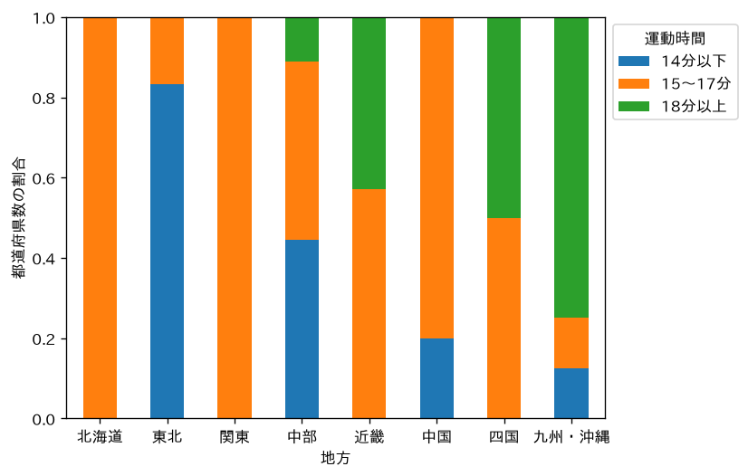
18 分以上の県は, 実数では近畿が 3 県, 四国が 2 県で近畿のほうが多いのに対し, 割合では四国が 0.50, 近畿が 0.43 で四国のほうが大きくなります. 実数の図は「どの地方に 18 分以上の県が多いか」に, 割合の図は「どの地方で 18 分以上の県の比率が高いか」に答えます. ただし北海道は 1 道だけなので, 割合は 0 か 1 にしかなりません. 割合の図では, もとの件数が少ないグループの値が大きく振れる点に注意が要ります.
都道府県の人口や面積のように比べる単位の大きさが違うときも, 同じ判断が要ります. 例えば都道府県ごとの病院の数は人口の多い都道府県ほど多くなりやすく, 医療の手厚さを比べるなら人口あたりの数に直します.
対数軸
値が何桁にもわたって開いているとき (例えば 10 と 100000 が同じ図に並ぶとき) は, 縦軸を対数軸 (plt.yscale('log')) にする方法があります. 対数軸では目盛りの等間隔が等しい比 (何倍か) を表すので, 小さい値同士の違いも読めるようになります. 一方で, 棒の長さは値に比例しなくなるので, 対数軸には棒グラフより点や線で描く図が向きます.
都道府県別のデータでは, 開きの最も大きい食費でも最大 (83506 円) が最小 (56298 円) の約 1.5 倍にとどまり, 対数軸にしても図はほとんど変わりません. 対数軸を使うかどうかは, 値の最大と最小の比を確かめてから決めます.
横軸の並べ方
都道府県ごとの棒グラフでは, 横軸に都道府県をどの順に並べるかで読み取れることが変わります. データのファイルは北海道から沖縄県まで北から南の順に並んでいるので, そのまま描いた図と, 運動時間の長い順に並べ替えた図を比べます.
fig, axes = plt.subplots(nrows=2, figsize=(12, 7))
# 上: ファイルの並び (北海道から沖縄県まで, 北から南の順) のまま描きます.
axes[0].bar(df['pref'], df['sports'])
axes[0].set_title('北から南の順')
# 下: 運動時間の長い順に並べ替えてから描きます.
df_sorted = df.sort_values('sports', ascending=False)
axes[1].bar(df_sorted['pref'], df_sorted['sports'])
axes[1].set_title('運動時間の長い順')
for ax in axes:
ax.set_ylabel('運動時間 (分)')
ax.tick_params(axis='x', rotation=90)
fig.tight_layout()
plt.show()plt.subplots(nrows=2) は 1 枚の図を上下 2 つの領域に分け, axes[0], axes[1] でそれぞれの領域に描きます (グラフの分割 (発展)で詳しく扱います).
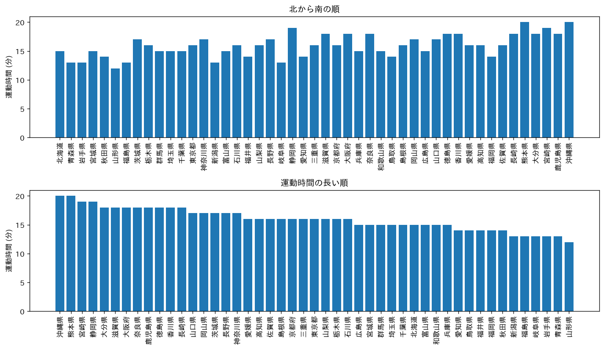
北から南の順の図では, 東北の各県 (12〜15 分) が低く, 九州の長崎県から沖縄県 (18〜20 分) が高く, 南へ行くほど運動時間が長くなる傾向が見えます. 長い順の図では, 最も長いのが熊本県と沖縄県 (20 分), 最も短いのが山形県 (12 分) という順位が読めますが, 地理的な傾向は読めません. 地域による違いを見るには北から南の順が, 順位を見るには長い順が向きます.
この節に対応する演習は, 章末のExercise DSP3-2です.
誇張と強調が読み取りに与える影響
同じデータでも, 軸の範囲, 立体的な描き方, 色の付け方によって, 図から受ける印象は大きく変わります. 誇張された図は, グループの間の小さい差を大きく見せたり, 関係のないものを関係があるように見せたりします. 次の 3 つの例では, 誇張された図を同じデータの適切な図と並べます.
縦軸を 0 から始めない棒グラフ
地方ごとの平均身長 (都道府県の値の単純平均) を, 縦軸を 169 cm から始めた棒グラフと, 0 から始めた棒グラフで描きます.
# 地方ごとに, 都道府県の平均身長を平均します.
height = df.groupby('region')['height'].mean().reindex(order)
print(height.round(1))
fig, axes = plt.subplots(ncols=2, figsize=(12, 4))
axes[0].bar(height.index, height)
axes[0].set_ylim(169, 170.6) # 縦軸を 169 cm から始める
axes[0].set_title('縦軸を 169 cm から始めた棒グラフ')
axes[1].bar(height.index, height)
axes[1].set_ylim(0, 180) # 縦軸を 0 から始める
axes[1].set_title('縦軸を 0 から始めた棒グラフ')
for ax in axes:
ax.set_ylabel('平均身長 (cm)')
ax.tick_params(axis='x', rotation=45)
fig.tight_layout()
plt.show()region
北海道 170.4
東北 170.3
関東 170.3
中部 170.2
近畿 170.2
中国 169.5
四国 169.4
九州・沖縄 169.4
Name: height, dtype: float64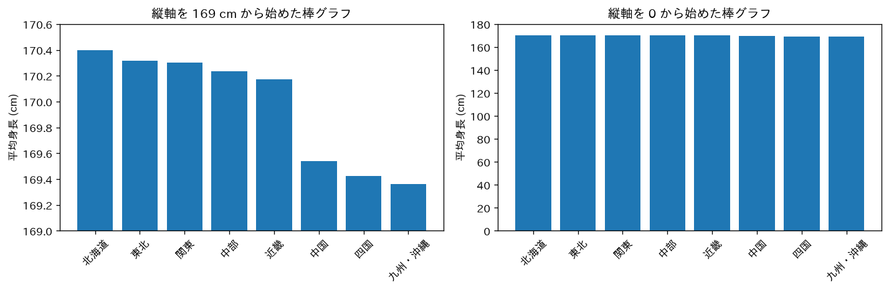
左の図では, 北海道の棒が九州・沖縄の棒の約 3.9 倍の長さに見えます. 北海道と九州・沖縄の平均身長の実際の差は約 1.0 cm で, 北海道の値は九州・沖縄の値の約 1.006 倍にすぎません. 棒グラフは棒の長さで値を表すので, 縦軸を 0 以外から始めると, 長さの比が値の比と食い違います. 右の図のように縦軸を 0 から始めると, 地方ごとの平均身長はほぼ同じだと読み取れます.
地方の間の 1 cm 程度の差そのものを見せたいときは, 縦軸を切り詰めるのではなく, 全国平均との差を棒にするなど, 0 を基準にした別の量を描きます. なお, 散布図, 折れ線グラフ, 箱ひげ図は長さでなく位置で値を表すので, 縦軸を 0 から始める必要はありません. 縦軸を 0 から始めない場合も, 軸の目盛りと単位を必ず表示します.
3D の円グラフ
次の図は, 地方ごとの都道府県数を, 立体的に描いた円グラフ (左) と棒グラフ (右) で表したものです. matplotlib には立体的な円グラフを描く関数はなく, 比較のために作った図ですが, 表計算ソフトでは簡単に作れます.
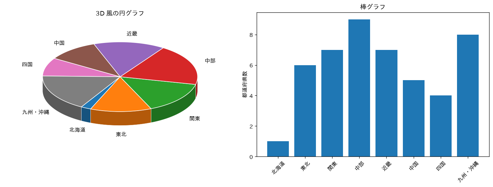
関東 (7 都県) と近畿 (7 府県) は同じ数ですが, 左の図では手前にある関東のほうが大きく見えます. 手前の扇形にだけ側面が描き足され, その分だけ面積が大きく見えるからです. また, 円を傾けて楕円にすると, 左右に向いた扇形より手前や奥に向いた扇形のほうが細く見えます. 東北 (6 県) も, 手前にあるために奥の近畿 (7 府県) と同じかそれ以上の大きさに見えます. 立体にすると, 扇形の見かけの面積が値でなく位置で決まります. 構成を見せるなら平面の円グラフを, 値を正確に比べるなら右の棒グラフを使います.
過剰な色の強調
色は, 図の中で区別したいものを示すために使います. 次のコードは, 都道府県ごとの運動時間を, 棒ごとに違う色で描いた図と, 伝えたい県だけに色を付けた図を描きます.
fig, axes = plt.subplots(nrows=2, figsize=(12, 7))
# 上: 棒ごとに違う色を付けた図
rainbow = plt.get_cmap('hsv')(np.linspace(0, 1, len(df)))
axes[0].bar(df['pref'], df['sports'], color=rainbow)
axes[0].set_title('棒ごとに色を変えた図')
# 下: 伝えたい都道府県 (運動時間が最も長い県) だけに色を付けた図
top = df['sports'] == df['sports'].max()
colors = np.where(top, 'tab:red', 'lightgray')
axes[1].bar(df['pref'], df['sports'], color=colors)
axes[1].set_title('運動時間が最も長い県だけに色を付けた図')
for ax in axes:
ax.set_ylabel('運動時間 (分)')
ax.tick_params(axis='x', rotation=90)
fig.tight_layout()
plt.show()plt.get_cmap('hsv') は色相を一周する色の列 (カラーマップ) で, np.linspace(0, 1, len(df)) で都道府県の数だけ色を取り出しています. np.where(条件, A, B) は, 条件が真の要素を A に, 偽の要素を B にした配列を返します.
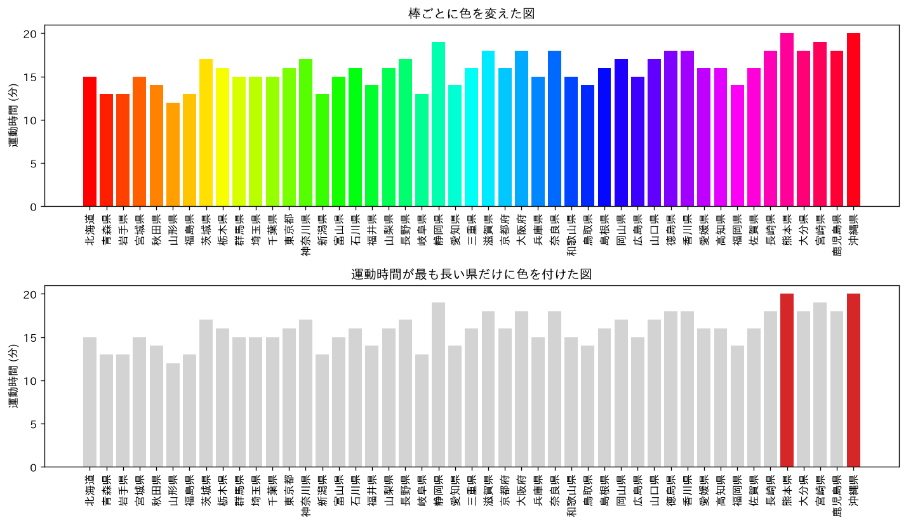
上の図の色は何の情報も表していませんが, 読み手は色に意味を探します. 例えば北海道と沖縄県は同じ赤で描かれているので, 色だけを見ると同じグループに属すると読めます. 明るい黄色や緑の棒にも視線が向くので, どの棒に注目すべきかが図から読み取れません. 下の図は, 運動時間が最も長い熊本県と沖縄県 (20 分) だけを赤にし, 残りを灰色にしています. 伝えたい点が 1 つに定まり, 2 県と他の県との運動時間の差も棒の長さで読めます.
図を人に見せる前に, 次の 4 点を確かめます.
- 棒グラフの縦軸が 0 から始まっていること.
- 必要のない立体表現や装飾を使っていないこと.
- 色を, 区別したいものだけに付けていること.
- 軸のラベルと単位が書かれていること.
この節に対応する演習は, 章末のExercise DSP3-1です.
演習
Exercise DSP3-1
誇張された棒グラフを直す
対応する節: 誇張と強調が読み取りに与える影響
次のコードは, 地方ごとの平均体重 (都道府県の値の単純平均) を描きます.
df = pd.read_csv('data/pref_stats.csv', encoding='utf-8-sig')
region = pd.read_csv('data/pref_region.csv', encoding='utf-8-sig')
df = df.merge(region, on='pref')
order = ['北海道', '東北', '関東', '中部', '近畿', '中国', '四国', '九州・沖縄']
weight = df.groupby('region')['weight'].mean().reindex(order)
colors = plt.get_cmap('hsv')(np.linspace(0, 1, len(weight)))
plt.bar(weight.index, weight, color=colors)
plt.ylim(61, 64.5)
plt.ylabel('平均体重 (kg)')
plt.title('東北地方の体重は中国地方の何倍も重い!')
plt.show()- 描かれた図で, 東北の棒は中国の棒の何倍の長さに見えるかを求めてください. また, 実際の平均体重は何倍かを求めてください.
- 誇張と強調が読み取りに与える影響の 4 つの点検項目に沿って図を直してください. 色は, 平均体重が最も重い地方だけに付けてください.
提出ファイル名: dsp3-1.py
回答例
import pandas as pd
import numpy as np
import matplotlib.pyplot as plt
import matplotlib_fontja
df = pd.read_csv('data/pref_stats.csv', encoding='utf-8-sig')
region = pd.read_csv('data/pref_region.csv', encoding='utf-8-sig')
df = df.merge(region, on='pref')
order = ['北海道', '東北', '関東', '中部', '近畿', '中国', '四国', '九州・沖縄']
weight = df.groupby('region')['weight'].mean().reindex(order)
print(weight.round(2))
# 問1: 縦軸 61 kg から上の部分の長さの比と, 実際の値の比
print('棒の長さの比:', round((weight['東北'] - 61) / (weight['中国'] - 61), 1))
print('実際の値の比:', round(weight['東北'] / weight['中国'], 3))
# 問2: 縦軸を 0 から始め, 色は伝えたい地方 (最も重い東北) だけに付ける
colors = np.where(weight.index == weight.idxmax(), 'tab:red', 'lightgray')
plt.bar(weight.index, weight, color=colors)
plt.ylim(0, 70)
plt.ylabel('平均体重 (kg)')
plt.title('地方別の平均体重 (都道府県の値の単純平均)')
plt.show()region
北海道 63.70
東北 63.97
関東 62.24
中部 61.89
近畿 62.03
中国 61.22
四国 62.68
九州・沖縄 61.81
Name: weight, dtype: float64
棒の長さの比: 13.5
実際の値の比: 1.045問 1: 東北の棒は中国の棒の約 13.5 倍の長さに見えますが, 実際の平均体重は約 1.045 倍 (約 2.8 kg の差) です. 縦軸が 61 kg から始まっているため, 61 kg を超えた部分だけの長さを比べることになります.
問 2: 縦軸を 0 から始め, 棒ごとの色をやめて東北だけを赤にし, 誇張したタイトルを内容を表すタイトルに替えています. 軸のラベルと単位は元の図にもあるので残します.
Exercise DSP3-2
見せたいことに合う図を選んで描く
都道府県別のデータと地方の表を使い, 次の 2 つの問いに答える図を描いてください. それぞれ, 図で見せたいこと (比較, 構成, 分布, 変化, 関係のどれか), 選んだ図の種類, 縦軸と横軸に取ったものを書き, 図から読み取れることを 1〜2 文で述べてください.
- 睡眠時間の散らばり方は, 地方によってどう違うか.
- 食費の多い都道府県ほど, 平均身長は高いか.
提出ファイル名: dsp3-2.py
回答例
import pandas as pd
import matplotlib.pyplot as plt
import matplotlib_fontja
df = pd.read_csv('data/pref_stats.csv', encoding='utf-8-sig')
region = pd.read_csv('data/pref_region.csv', encoding='utf-8-sig')
df = df.merge(region, on='pref')
order = ['北海道', '東北', '関東', '中部', '近畿', '中国', '四国', '九州・沖縄']
# 問1: 分布の比較なので箱ひげ図. 横軸に地方, 縦軸に睡眠時間
data = [df[df['region'] == r]['sleep'] for r in order]
plt.boxplot(data, tick_labels=order)
plt.xlabel('地方')
plt.ylabel('睡眠時間 (分)')
plt.show()
# 問2: 2 つの量的データの関係なので散布図. 横軸に食費, 縦軸に身長
plt.scatter(df['food'], df['height'])
plt.xlabel('食費 (円)')
plt.ylabel('平均身長 (cm)')
plt.show()問 1: 見せたいことは分布なので, 横軸に地方, 縦軸に睡眠時間 (分) を取った箱ひげ図を描きます. 東北は中央値が約 490 分と最も長く, 関東は中央値が 463 分と最も短くなります. 北海道は 1 道だけなので箱にならず, 1 本の線になります.
問 2: 見せたいことは 2 つの量的データの関係なので, 横軸に食費 (円), 縦軸に平均身長 (cm) を取った散布図を描きます. 食費の多い都道府県ほど平均身長が高い傾向が見えます. ただし, この図から食費が身長を高くするという因果関係までは読み取れません.
plt.boxplot() の tick_labels= は matplotlib 3.9 以降の引数名で, それより前の版では labels= を使います.
Exercise DSP3-3
複数のグループを折れ線・散布図・ヒートマップで比べる
対応する節: 折れ線グラフ, 散布図, ヒートマップ, for 文を利用したグラフ (発展), グラフの分割 (発展)
問 1 では, 授業では扱わない (発展) の節を使います.
- Google トレンドで 4 つのワードの同じ期間の推移を調べ, CSV をダウンロードしてください. この CSV から, for 文を利用したグラフ (発展)とグラフの分割 (発展)を使って, 次の 2 通りの折れ線グラフを作成してください.
- 1 つのグラフに表示: for 文で 4 本の折れ線を色を変えて重ね, 凡例も表示する.
- グラフの分割: グラフを 4 つに分割し, ワードごとの折れ線グラフを 1 つずつ描く.
- こちらのカブトムシの種類別の体長と体重のデータを使って散布図を作成してください. カブトムシの種類別に, 点の色と形を変えてください.
- こちらの森の地点別に採取できたカブトムシの種類を記録したデータをヒートマップで可視化し, どの森でどのカブトムシが採れやすいかを分析してください.
提出ファイル名: dsp3-3.py
回答例
import pandas as pd
import matplotlib.pyplot as plt
import seaborn as sns
import matplotlib_fontja
# 問1: Google トレンドの CSV は先頭の 2 行が説明なので, skiprows=2 で読み飛ばします.
# (ダウンロードした CSV の先頭を確認し, 説明の行数に合わせて調整します.)
trends = pd.read_csv('data/trends.csv', skiprows=2, index_col=0, parse_dates=True)
# 1 つのグラフに表示: for 文で列ごとに折れ線を重ね, 凡例を付けます.
for word in trends.columns:
plt.plot(trends.index, trends[word], label=word)
plt.ylabel('検索の相対的な人気度')
plt.legend()
plt.xticks(rotation=15)
plt.show()
# グラフの分割: 2 行 2 列に分け, それぞれにワードを 1 つずつ描きます.
fig, axes = plt.subplots(nrows=2, ncols=2, sharex=True, sharey=True)
for ax, word in zip(axes.flatten(), trends.columns):
ax.plot(trends.index, trends[word])
ax.set_title(word)
plt.show()
# 問2: 種類ごとに色と点の形を変えて重ねます.
beetle = pd.read_csv('data/beetle_datal.csv')
markers = ['o', 's', '^', 'D']
for (name, group), marker in zip(beetle.groupby('Type'), markers):
plt.scatter(group['Length'], group['Weight'], marker=marker, label=name)
plt.xlabel('体長 (mm)')
plt.ylabel('体重 (g)')
plt.legend()
plt.show()
print(beetle[['Length', 'Weight']].corr().round(2))
print(beetle.groupby('Type')[['Length', 'Weight']].mean().round(1))
# 問3: 森 (行) と種類 (列) の組み合わせごとに数え, ヒートマップにします.
forest = pd.read_csv('data/forest_beetle_data.csv')
cross = pd.crosstab(forest['Location'], forest['Type'])
print(cross.to_string())
sns.heatmap(cross, cmap=plt.get_cmap('Reds'), linewidths=.5, annot=True, fmt='d')
plt.show() Length Weight
Length 1.00 0.65
Weight 0.65 1.00
Length Weight
Type
Allomyrina dichotoma 50.2 21.0
Chalcosoma atlas 51.3 19.7
Dynastes hercules 47.9 19.8
Megasoma elephas 49.5 20.5
Type Allomyrina dichotoma Chalcosoma atlas Dynastes hercules Megasoma elephas
Location
Forest A 47 11 12 6
Forest B 14 9 43 8
Forest C 11 7 8 49
Forest D 11 54 11 8問 1: 同じデータを, 1 つのグラフに重ねる描き方と, ワードごとに分ける描き方で表しています. 重ねると 4 本の水準の違いを直接比べられ, 分けると 1 本ごとの上下の動きが読み取りやすくなります. 分割では sharex=True, sharey=True で軸をそろえているので, 分けても水準の違いは比べられます.
問 2: 体長が大きいほど体重も大きい傾向があります (相関係数 0.65). 一方, 4 種類の点は重なり合っていて, 種類ごとの平均も体長 48〜51 mm, 体重 20〜21 g と近いため, 種類による違いはこの図からほとんど読み取れません.
問 3: 森ごとに最も多く採れる種類が異なります. Forest A は Allomyrina dichotoma (47 個体), Forest B は Dynastes hercules (43 個体), Forest C は Megasoma elephas (49 個体), Forest D は Chalcosoma atlas (54 個体) が最も多く, 他の種類は 6〜14 個体にとどまります. 各森の採取数は 74〜84 個体と大きく違わないので, 個体数のまま比べられます.
Exercise DSP3-4
棒グラフ・円グラフ・折れ線グラフを作る
円グラフ用のデータ, 折れ線グラフ用のデータ, 棒グラフ用のデータを使い, それぞれのグラフを作成してください. 図を読むために必要だと思う表示 (タイトル, 軸のラベル, 数値の表示など) を設定してください.
提出ファイル名: dsp3-4.py
回答例
import pandas as pd
import matplotlib.pyplot as plt
import matplotlib_fontja
# 円グラフ: 内訳の割合を読むので, 割合を表示します.
pie = pd.read_csv('data/pie_chart_practice.csv')
plt.pie(pie['Values'], labels=pie['Category'], autopct='%1.1f%%')
plt.title('カテゴリ別の割合')
plt.show()
# 折れ線グラフ: 月の順に並んだ値の変化を読みます.
line = pd.read_csv('data/line_chart_practice.csv')
plt.plot(line['Month'], line['Value'], marker='o')
plt.xlabel('月')
plt.ylabel('値')
plt.title('月ごとの値の推移')
plt.xticks(rotation=15)
plt.show()
# 棒グラフ: 項目の大小を比べるので, 棒の上に値を表示します.
bar = pd.read_csv('data/bar_chart_practice.csv')
bars = plt.bar(bar['Item'], bar['Value'])
plt.bar_label(bars)
plt.xlabel('項目')
plt.ylabel('値')
plt.title('項目別の値')
plt.show()円グラフは A から D の割合が 30%, 40%, 20%, 10% で, B が最も大きく D が最も小さいことが読み取れます. 折れ線グラフは 1 月の 100 から 6 月の 350 まで, 毎月 50 ずつ一定の割合で増えています. 棒グラフは Item2 と Item4 が 35 で最も大きく, Item1 が 20 で最も小さいことが分かります. 円グラフには割合, 棒グラフには値を直接表示すると, 目盛りを読み取らなくても大小を比べられます.
Exercise DSP3-5
度数分布表とヒストグラムを作る
質的データと量的データのそれぞれについて, 度数分布表とヒストグラムを作成し, ppt などでグラフとその解釈をまとめてください.
提出ファイル名: dsp3-5.py (ppt などの資料も添えてください)
回答例
import math
import numpy as np
import pandas as pd
import matplotlib.pyplot as plt
import matplotlib_fontja
# 質的データ: 値ごとに数え, 相対度数と累積度数を加えます.
qual = pd.read_csv('data/qualitative_histogram_practice.csv')
freq = qual['Category'].value_counts().sort_index()
rel_freq = freq / freq.sum()
dist = pd.DataFrame({'Freq': freq, 'Rel': rel_freq,
'Cum': freq.cumsum(), 'RelCum': rel_freq.cumsum()})
print(dist)
plt.bar(dist.index, dist['Freq'], width=1)
plt.ylabel('度数')
plt.show()
# 量的データ: スタージェスの公式で階級数を決め, 度数分布表を作ります.
quant = pd.read_csv('data/quantitative_histogram_practice.csv')
values = quant['Values']
def make_dist(values):
stnum = math.floor(1 + math.log2(len(values)))
space = int((values.max() - values.min()) / stnum)
bins = np.arange(int(values.min()) - 1, int(values.max()) + 1 + space, space)
freq = values.value_counts(bins=bins, sort=False)
rel_freq = freq / freq.sum()
dist = pd.DataFrame({'Freq': freq, 'Rel': rel_freq,
'Cum': freq.cumsum(), 'RelCum': rel_freq.cumsum()})
return dist, bins
dist, bins = make_dist(values)
print(dist.round(2))
plt.hist(values, bins=bins)
plt.show()
# 最大値だけが桁外れに大きい (外れ値) ので, 除いて作り直します.
print(values.max(), values.drop(values.idxmax()).max())
values = values.drop(values.idxmax())
dist, bins = make_dist(values)
print(dist.round(2))
plt.hist(values, bins=bins)
plt.xlabel('値')
plt.ylabel('度数')
plt.show() Freq Rel Cum RelCum
Category
Category A 21 0.21 21 0.21
Category B 26 0.26 47 0.47
Category C 25 0.25 72 0.72
Category D 28 0.28 100 1.00
Freq Rel Cum RelCum
(8.999, 821206.0] 99 0.99 99 0.99
(821206.0, 1642403.0] 0 0.00 99 0.99
(1642403.0, 2463600.0] 0 0.00 99 0.99
(2463600.0, 3284797.0] 0 0.00 99 0.99
(3284797.0, 4105994.0] 0 0.00 99 0.99
(4105994.0, 4927191.0] 0 0.00 99 0.99
(4927191.0, 5748388.0] 0 0.00 99 0.99
(5748388.0, 6569585.0] 1 0.01 100 1.00
5748392.168 77.78417277
Freq Rel Cum RelCum
(8.999, 18.0] 1 0.01 1 0.01
(18.0, 27.0] 5 0.05 6 0.06
(27.0, 36.0] 11 0.11 17 0.17
(36.0, 45.0] 21 0.21 38 0.38
(45.0, 54.0] 27 0.27 65 0.66
(54.0, 63.0] 20 0.20 85 0.86
(63.0, 72.0] 9 0.09 94 0.95
(72.0, 81.0] 5 0.05 99 1.00質的データは, 4 つのカテゴリの度数が 21 から 28 でほぼ均等です. 最も多いのは D (28), 最も少ないのは A (21) ですが, 差は小さく, 偏りがあるとは言えません.
量的データは, 最大値の約 575 万が, 他の値の最大値 (約 78) から桁違いに離れた外れ値です. この 1 件が階級の幅を押し広げるため, 最初の度数分布表では 99 件が最初の階級に入り, ヒストグラムは 1 本の棒しか読み取れません. 実際の分析では, 外れ値を除く前に入力ミスなどの原因を確認します. 外れ値を除いて作り直すと, 45 を超え 54 以下の階級が最も多い (27 件), 左右ほぼ対称な山の形になっていることが読み取れます.